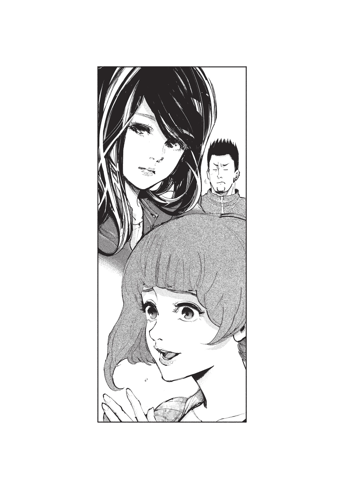
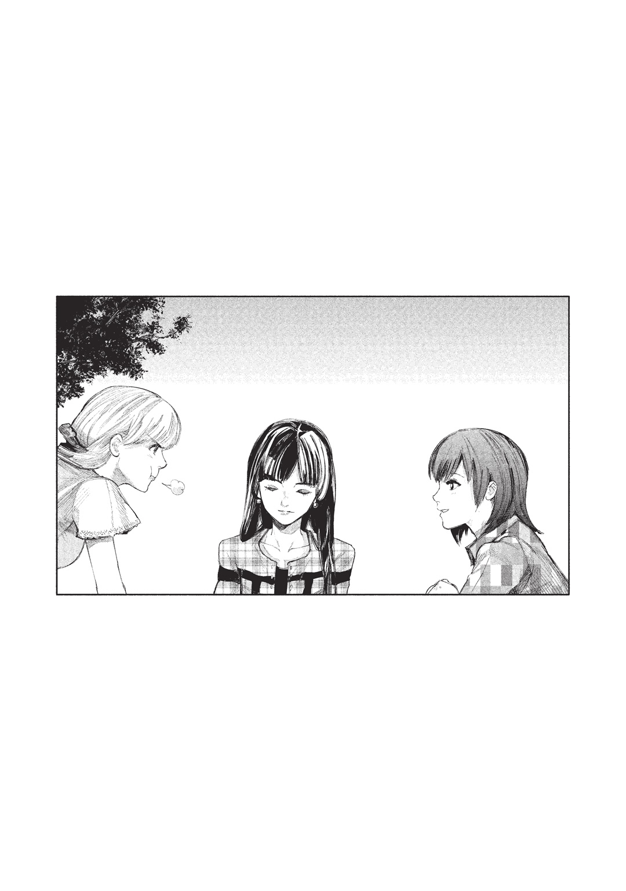

| 東京喰種トーキョーグール［昔日］ | |
| 石田スイ & 十和田シン | |
この本は縦書きでレイアウトされています。
また、ご覧になる機種により、表示の差が認められることがあります。
登場人物紹介
霧嶋董香 ●きりしまとうか
〝喰種〟の少女。［ＣＣＧ］からは『ラビット』と呼ばれ危険視される。高校に通い、友人もいる。
霧嶋絢都 ●きりしまあやと
トーカの弟。『アオギリの樹』幹部である。姉に対して敵意をむき出しにするが、一方で情を捨てきれない。
芳村 ●よしむら
〝喰種〟たちの集う喫茶店『あんていく』の店長。行動に謎が多い人物である。その正体は...。
金木 研 ●かねきけん
〝喰種〟の臓器を移植された青年。人でありながら人を喰う存在となる。その葛藤と困難が、彼の運命を動かしていく。
永近英良 ●ながちかひでよし
カネキの幼馴染みであり、親友。好奇心が強く、勘が鋭い。［ＣＣＧ］に勤めることになるが...。
神代利世 ●かみしろりぜ
欲望のままに人間を喰い散らかす、〝大喰い〟の異名を持つ〝喰種〟。その臓器はカネキに移植された。
万丈数壱 ●ばんじょうかずいち
リゼを慕っていた元11区リーダー。弱い。とはいえ、部下たちから慕われている。
真戸 暁 ●まどあきら
［ＣＣＧ］の捜査官。アカデミーを首席で卒業した才女である。
真戸呉緒 ●まどくれお
アキラの父親。『クインケ』に異様な執着を示すベテラン捜査官。
西尾 錦 ●にしおにしき
〝喰種〟の青年。上井大学の薬学部に通っている。
西野貴未 ●にしのきみ
ニシキの恋人。彼が〝喰種〟であることを知っている。
古間円児 ●こまえんじ
『あんていく』の店員。その昔は凶暴な〝喰種〟だったというが...。
入見カヤ ●いりみかや
『あんていく』の店員。入店するまでは、『ブラックドーベル』という〝喰種〟の集団を束ねていた。
一
ずっと一緒にいられるようにと、願った道が別れ道。
生きたいと願うことさえ、この世界では罪になる。
人よりも圧倒的に優れた力を持ちながら、人の目から逃れるようにして生きていくことしか許されない存在、〝喰種〟。
どの〝喰種〟も人間に対して大なり小なり苦い経験があるのだが、霧嶋董香もその一人だ。
幼かった頃、トーカ達家族の面倒を見てくれていた人間に密告され、〝喰種〟駆逐を目的とする喰種対策局〔ＣＣＧ〕の捜査官に追われたときのことを、今でも鮮明に覚えている。だから、人に背を向けるようにして弟、絢都と生きてきた。
「......弱っえークセにケンカふっかけてきて馬鹿なんじゃねぇの、コイツ。なぁ、姉貴？」
コンクリートの上、ビルの最上階から飛び降りた自殺死体のようにへばりついた男がビクビクと痙攣している。それを、トーカとアヤトは冷めた目で見下ろしていた。
「......グ、グゾ、ガキのクセに、俺ぁ、ここらを仕切る〝フタマル〟の幹部なんだぞ......ッ！ てめーらガキなんかに、やられるはずがねぇ......ッ」
まだしゃべる余力があったのか、唸るように叫ぶ男にアヤトがぴくりと片眉を上げる。
「ほっときなアヤト」
それをトーカは気だるげに制止した。
「勝手に死ぬでしょ。動いて腹減ったし。喰場行こ」
「............」
そして、促すように歩きだす。アヤトは納得していない様子だったが諦めたようにトーカの後に続いた。
だがそこで、転がっていた男が最後の力を振り絞るように起きあがる。
「こんの......」
男は再び赫子をまとった。
「クソガキどもがあああああああああ――......ッ!!」
油断した今なら一矢報いることができる。それが男の見立てだったのだろう。
「......バーカ」
「大人しく死ねばよかったものをよ」
しかし姉弟の背から同時に赫子が飛び出した。淀みなく溢れ出すRc細胞。姉弟の赤い目が男を捉える。
「ヒ......」
その声を最後に、男は蜂の巣と化し、命までもが吹き飛ばされた。
〝喰種〟の世界は弱肉強食。力さえ持っていれば、他者に蹂躙されることなく生きていける、至ってシンプルな仕組みだ。窮屈でつまらないルールに縛られ、群れて生きる人間達とは訳が違う。
だから強くあればいいと思う反面、引っかかるものがあった。
トーカは赤く染まっていた瞳の色を戻し、その目で近隣のマンションを見上げる。部屋から零れる明かりの中、聞こえてくるのは楽しげな笑い声。〝喰種〟の餌でしかないはずの人間達が、なんの危機感も持たずのうのうと暮らしている。その無神経さに虫酸が走ると同時に、思い出す光景もあった。
トーカがいて、アヤトがいて、そして、父、アラタがいて、人のように振る舞い生きていたあの頃。そこには、あの明かりの先にあるだろう団らんと同じ平穏が――。
しかし、トーカは思い出をかき消すように首を振る。〝喰種〟と〝人間〟は違う。重なるものなどあるはずがない。そう言い聞かせ、トーカは明かりから目を背けた。
二
「『〝喰種〟が東京を支配する!?』、ね......」
アパートの一室、放り投げられた週刊誌の表紙にそんな文字が躍っている。アヤトが盗んできた雑誌だろう。トーカは雑誌をテーブルの上に置き、息をついた。
時はすでに正午過ぎ。アヤトはまだ寝ているのか、部屋から出てこない。しばらく悩んだ後、トーカはアヤトの部屋の中へと声をかけた。
「アヤト。芳村のジイさんの所に行くけど、あんたはどうする？」
中から返事はない。寝ているのか、それとも、聞こえなかったのか。
「アヤト......」
「っせぇな。行かねぇよ」
繰り返し確認しようとしたところで、苛立たしげな声が返ってきた。ドアが乱暴に開き、今まで寝ていたらしいアヤトが、手櫛で髪をときながらトーカを無視してリビングへと進む。
「......なによ、その態度」
咎めるように言えば、アヤトもアヤトで、「はぁ？」と睨みつけてきた。しかし彼はすぐに視線を外してソファに座りこむと、トーカが先ほど片づけた雑誌をたぐり寄せ、ページをめくる。
「勝手に行けよ」
昔は、どこに行くにもついてきていたのに、今は気まぐれに行動してばかり。トーカの言葉に突っかかってくることも増えてきた。その度に、アヤトが何を考えているのかわからなくなる。
表向きは喫茶店、裏では20区の〝喰種〟達を取り仕切っている「あんていく」に着くと、ランチタイムを過ぎたからか店内は閑散としていた。何人かコーヒーを飲んでいるものはいるが、全員〝喰種〟のようだ。
「......いらっしゃい」
奥でカップを拭っていた店長、芳村がトーカに気がつき、こちらを見る。ケンカを吹っかけてきた〝喰種〟をトーカとアヤトで殺したことはすでに把握しているだろう。いつものように説教してくるはずだと構えながらカウンター席に座り「コーヒーちょうだい」とねだった。
芳村は何か言うこともなくコーヒーを準備し、トーカの前に差し出してくる。注意されるだろうと思っていたのに、何も言われないことでかえって居心地の悪さを感じた。それも計算の上だとしたら意地が悪い。トーカは平静を装ってコーヒーを口に含む。
「......死体は四方君が片づけてくれたけど、こんなことが続けば〔ＣＣＧ〕に目をつけられるよ」
だが、やはり芳村。一気に踏みこんできた。トーカは「うるさいなぁ」と、コーヒーを手にしたままそっぽを向く。
「向こうは赫子痕から〝喰種〟を特定する技術だって持っているんだから。派手な行動をすれば必ず足がつく。それは、トーカちゃんに限った話ではないんだよ。アヤト君だって――......」
そこまで言ったところで、店のドアベルがカランとなった。新しい客が入ってきたようだ。しかも、人間の客が。
人前で〝喰種〟であることが特定されてしまう話なんて御法度。芳村は何事もなかったかのように店の仕事に戻り、トーカも口を閉じる。
そこから、人間の客が一人、また一人と増えてきた。アヤトは「あんていく」を敬遠している素振りがあるが、まさしくこの環境が原因だろう。〝喰種〟の店に〝人〟の客。仮初めとはいえ、〝喰種〟と〝人〟の共存がここにある。それが、アヤトのしゃくに障るらしい。
「......アヤト君は年こそ若いものの、強い力を持っている。その力が間違った方向に彼を突き動かさないか心配になるよ」
芳村が人に聞こえないようにぽつりと零す。
「間違った方向ってなによ」
「力を持てば、失うものも多いんだよ」
曖昧な物言いを繰り返す芳村。それに苛立ち、トーカはコーヒーカップを乱暴にソーサーの上に乗せた。
「トーカちゃん」
そのまま、振り返らず店のドアを潜る。芳村のため息が聞こえたような気がした。
空は晴れ、往来には人が行き交い、街は陽気に溢れている。しかし、トーカの気持ちは沈んでいた。
「......帰ろ」
自分に言い聞かせるように呟き歩きだすものの、何度も何度も足が止まる。通りに並ぶ店のガラスに映った自分の顔を見れば、表情が淀んでいるような気がした。こんな顔のまま戻りたくない。
トーカは周囲に人がいないことを確認すると、塀や低い屋根を足場にして近くにあったマンションの屋上まで駆け上る。見晴らしの良いこの場所は地上より風が強く、トーカの黒髪を揺らした。
気分が落ち着くまでここにいよう。トーカは屋上の縁に腰掛け、膝を抱え目を閉じる。
「.........？」
しかし、そんなトーカの耳に、どこからか泣き声が聞こえてきた。初めは無視していたがあまりにも続くので耳を澄ます。どうやらこのマンション下から聞こえてきているらしい。トーカは声の主を探すように見下ろした。
「子供......」
そこに、五歳くらいの少年が泣きながら座りこんでいる。さらに注意深く聞いてみれば、「お母さん」と言っているようだ。母親とはぐれてしまったのだろうか。
「なんだよ、どこにいるんだよ、母親は......」
少年の周辺を探るが母親らしき人物は見あたらない。通りかかる人は、何事だと少年を見はするものの、声をかけることなく通り過ぎていった。少年は小さな体を丸め、「お母さん、お母さん」と泣いている。
なぜかそれに、昔のアヤトが重なった。
「......チッ」
トーカは忌々しげに舌を打ち、気づかれないようにマンションから飛び降りる。人間なんかに関わっても得しないのに。そう思いながら、少年の背後から声をかけた。
「......どうしたんだよ」
少年がびくっと震えてこちらを見上げる。涙もいったん止まったようだ。
「母親は？」
そのまま母親の所在を尋ねたのだが。
「......ふええええええんッ！」
トーカの言葉に少年は再び火がついたように泣きだした。
「ちょっ......！」
周囲の視線が今度はトーカに向く。このままでは不審に思われそうだ。
「バ、バカ！ こっちに来い」
トーカはそう言うと、少年の手を引きその場を離れた。
歩くうちに少年も落ち着いたようだ。ひとまず近くにあった公園に入り、誰もいないブランコにそれぞれ腰掛ける。少年は現金なものでブランコを楽しそうにこぎ始めた。
「ったく、なんなんだよ......」
このまま放って帰ってしまおうか。そんな考えが頭をよぎる。
「お姉ちゃん、ありがとう」
そこで唐突に、少年が感謝の言葉を口にした。
「ハ、ハァ......？」
面食らうトーカに、「助けてもらったら、お礼しなさいってお父さんが言ってた」と少年が立ちこぎしながら言う。
「べつに、助けた訳じゃないし......」
口ごもるトーカだったが、少年は礼を言えたことに満足したのかブランコに夢中だ。
「あんた、父親は？」
母親の話をして大泣きされたので、今度は父親の話を振ってみる。少年は「仕事っ！」と元気よく返した。そうかと思えば青菜に塩をかけたように急にショボンとしてブランコを止める。
「保育園戻らないと、お父さん困らせちゃう」
「保育園......？」
もしかすると、勝手に抜け出してきたのだろうか。
「じゃあ戻れよ」
「............」
少年は黙りこんだまま足下に落ちていた小石を拾い上げ、公園の外に向かって投げつけた。ふてくされているようだ。
交番に連れて行くのが一番手っ取り早いのだろう。ただ、トーカも人であれば学校に行っているだろう年齢だ。少年を連れて交番に行けば、少年だけではなく、トーカも「学校はどうした」と余計な詮索をされるかもしれない。トーカは改めて放っておけばよかったと頭を抱える。
「翔太！ 翔太！」
しかしそこで聞こえた声。見ればスーツ姿の男性が、こちらに向かって駆けてくる。
「お父さん！」
翔太と呼ばれた少年は、ブランコから飛び降り、そちらに向かって走りだした。どうやら父親らしい。父親は駆け寄ってきた息子の頭に、ごつんと一つげんこつを落とした。
「心配したんだぞ！」
「わーん、ごめんなさーい！」
これで一件落着だろうか。だったらもういいだろう。何も言わずに立ち去ろうとしたトーカだったが、それよりも早く父親の視線に捕まってしまった。
「もしかしてこの子の相手をしてくれていたのかい？」
「べ、べつに......」
口ごもるトーカに、父親が、「保育園から抜け出して探し回っていたんだ。ありがとう」と微笑む。見ればトーカの父と同じ年代だ。それに懐かしさを覚えた。
「......母親、捜してるみたいだった」
だから親切のつもりで教えてやったのだが、それを聞いた途端、少年がさっと表情を変える。
「探してないもん！ 勝手なこと言うなよバカッ！」
今まで面倒を見てやっていたというのに、少年は「あのお姉ちゃんが噓つく！」とわめき始めた。呆気にとられたトーカだったが、こともあろうに父親が「そうなのか」と同意するように息子の背中を撫でる。これでは悪者だ。
ふざけんなよと言いかけたところで、父親が「すまないね、ありがとう」と言葉だけの礼を言い、少年を抱いたまま公園から去っていった。
「......なんだアレ」
一人残されたトーカは憮然とした表情で呟く。せっかく助けてやったのにあの態度。きっと少年は、父親と母親に甘やかされてきたのだ。
こんなことなら関わるんじゃなかった。トーカは苛立たしげに砂を蹴り、公園を後にした。
三
それから一週間たった日のことだ。トーカは再びコーヒーを求め「あんていく」に向かっていた。アヤトにも声をかけたが「出掛ける報告いちいちしてくんなよ。興味ねぇから」と吐き捨てられて終わり。
アヤトが何も言わずに出掛け、いつまでたっても帰ってこないと、トーカは何かあったのではないかと心配になる。アヤトも気にするだろうからと行き先を伝えていたが、そうではなかったようだ。その差がトーカの胸を痛ませる。
人間だったら、こんなふうに悩むことなく生きていけたのだろうに。顔を上げれば、ちょうど高校生らしき男子の二人連れが歩いている。
「この前買ったＣＤ、めっちゃ歌詞いいからお前も聞けって！」
「全米一位の洋楽だっけ？」
「そうそう！ 英語わかんなかったら俺が和訳した奴、隣で歌ってやるから！」
「え、いやべつにそれはいらないけど......」
彼らは何の悩みもなく順風満帆に生活しているのだろう。生きる辛さを感じたことなんかないに違いない。それが心底憎らしく、どこか羨ましかった。
「あれ、君は......」
そんな中、ふと、誰かから声をかけられる。見れば仕事帰りらしきスーツ姿の男が立っていた。見覚えがあり、一瞬考えた後、泣いていた少年の父親だったことを思い出す。
「............」
認識と同時に、警戒した。息子の言葉を信じこんだこの父親が、余計なことを言ってくるのではないかと思ったからだ。
だが、父親は敵意など見せずに、にこりと笑う。
「この前は迷惑をかけてすまなかったね。保育園から翔太が抜け出したと連絡がきて、先生方と一緒に探し回っていたんだよ。君が翔太と公園にいてくれて助かった」
会話はそこで途切れ、そのまま別れの挨拶さえすれば終わるだろうところで、少年の父親が「あのさ」と切り出す。
「翔太は、母親を呼んでいたのかい？」
未だ不信感が拭えずにいるトーカだったが、一方的に誤解されるのも気にくわない。
「お母さん、お母さんって泣きわめいてた」
無愛想に答えると、少年の父親は「そうか......」と思い悩むように顔を伏せる。少年がいたときとは態度が違うように見えた。
「俺の前じゃ言わないようにしているけど、やっぱり寂しいんだな」
意味深な言葉にトーカが眉をひそめると、彼は無理矢理明るい表情を作ってみせる。
「実は半年前に妻が亡くなってね」
「.........え」
「俺の前じゃ良い子にしてるんだけど、保育園じゃ問題行動が増えたんだ。この前みたいに抜け出したり、ケンカをしたり......。どうやら保育園で〝お母さん〟の話題を聞くのが嫌らしい」
家族に恵まれ何不自由なく暮らしてきたのだろうと思っていたのに。思いがけない告白にトーカは、お母さんと言いながら泣いていた少年の姿を思い出す。そこでチクリと胸が痛んだ。泣いている少年を見たときアヤトの小さい頃とだぶっていたが、突然トーカ自身にも重なって見えたからだ。
トーカも母を失ったとき、あんなふうに泣いていた。そして父に慰められていた。
「でも、必ず保育園には行くんだよ」
父親は、切なげに目を細める。
「働く俺に迷惑をかけないように、ちゃんと〝普通〟であるように、あの子なりに我慢して、戦っているんだ......」
それで、トーカが母の名を呼び泣いていたことを伝えたとき、それを知られてしまえば父親に心配をかけてしまうじゃないかと少年は怒っていたのか。
「......ああ、すまないね、こんな話をして。でも、ありがとう。優しいね、君は」
最後の最後で言われ慣れない言葉を聞いて、トーカはパッと顔を上げる。少年の父親はそんなトーカには気づかず、時計を確認して焦った表情を浮かべていた。
「しまった、今日は早く行くと言ったのに遅くなっちゃったな。それじゃあ、この辺で。ありがとう」
そう言って、息子を迎えに駆けていく。トーカはしばらくその場から動けなかった。
だからこそ気づけなかったのだ。
先ほどの出来事と言葉が頭をグルグル巡るまま「あんていく」に入ると、そこには珍しく四方蓮示の姿があった。何を言ってもなんだかんだで大抵のことは受け止めてくれる芳村とは違い、四方はいるだけでピリリとした緊張感がある。ここ最近、派手に暴れ回っていたトーカ達の後始末をしていただろうことを考えると、少々気まずかった。
案の定、四方にギロリと睨みつけられ、トーカは居心地悪く顔を背ける。
しかし、四方の視線はトーカを透かした向こう側に向けられていた。
「.........？」
四方は無言のままトーカの横を通り過ぎ、店のドアを開く。厳しい視線が左右に動き、彼が言った。
「......つけられたな、トーカ」
「えッ」
慌てて意識を集中させて周囲を探ると、逃げ去っていく気配に気づく。身のこなしから言って〝喰種〟のようだ。
「ちょうど、今その話をしていたんだよ」
芳村が表情を硬くし、トーカを見る。
「この前、トーカちゃんとアヤトくんが殺した〝喰種〟の仲間が君らに報復しようと狙っているらしい」
そういえばあの〝喰種〟が、この辺を仕切る〝フタマル〟の幹部だと言っていた覚えがある。20区は「あんていく」が取り仕切っているとはいえ、徒党を組んで独自に活動する〝喰種〟も少なからずいた。あの〝喰種〟もその一人だったのだろう。
「すでに何人かはアヤトが潰したみたいだがな」
「アヤトが？」
そんな話、アヤトから聞いていないし、素振りも見せなかった。しかし、四方は噓や冗談を言う男ではない。トーカの知らぬところで、様々なことが起きていたようだ。
「......お前は警戒を怠りすぎだ」
四方の注意に、トーカはカッと血が上る。
「私はべつに――......」
「言い訳はいい」
反論しようとしたトーカの言葉をさえぎり、「お前達が蒔いた種だ」と言い残して、四方は店を出る。言葉数こそ少なかったが、痛烈に批判された気分だ。トーカは一方的に言われるままだった憤りをぶつけるように店の壁を殴りつける。
「トーカちゃん」
「うっさいなぁッ！」
八つ当たりするように声を荒らげてトーカは店を飛び出した。
「......クソッ！」
ウダウダ言われなくたって自分の力で解決できる、戦える。
周囲を探れば、まるでこっちに来いとでも言うように、遠くで殺気が見え隠れした。トーカはあえてその誘いに乗ってその方角に駆ける。
しかし、ふとよぎる不安。戦いは連鎖し、次々と舞いこむ面倒ごと。一体いつまでこんなことが続くのだろう。
いや、今はそんなことを考えている場合じゃないと五感をとぎすませたところで、トーカの耳に雑音のような音が交じる。
自分をつけ狙っている者達のものではない。
「まさか」
トーカは足を止め、嫌な声を聞き捉えてしまったと顔をしかめた。
「......お父さーん、お父さーんッ！」
それはあの少年。また、保育園から抜け出したのだろうか、父の名を呼びながら駆け回っている。母を思って泣いていたときとは違い、切迫した雰囲気を感じた。
しかしトーカは、少年を無視するように背を向ける。あんなふうに泣いてもわめいていても、少年には彼を理解し、守ってくれる父親がいるのだ。
トーカは違う。トーカは自分の身を守るために戦わなければいけないし、大事なものを守るために、命も賭けなければいけない。今はトーカとアヤトの命を狙っているらしい〝喰種〟を倒さなければ。
少年の声は次第に遠のき聞こえなくなった。
結局、日は暮れ、〝喰種〟にとっては活動しやすい時間帯。トーカは自分の喰場に立っていた。ここから不自然な気配を感じる。相手はトーカの喰場を荒らすことで挑発しているのだろう。
警戒を怠らないように前に進み、相手を捉えようとするうちに人通りの少ない路地裏に入っていた。この先に、誰かいる――。
「......霧嶋、だな」
しかし、響いた声は背後から。振り返ればそこには体格のいい男が立ちはだかっていた。それを合図に物陰から彼の仲間が現れる。全部で四人。トーカを挟み撃ちするようにして立っている。
「......私のことつけ回してたのは、あんた？」
「そうだ。仲間がやられたらやり返す......それが〝フタマル〟の掟だッ」
あの〝喰種〟も言っていたチーム名をさもたいそうに叫び、男は勝ち誇った表情を浮かべた。細身の少女一人きりとなれば、負ける気はしないのだろう。
しかしトーカは冷静にぐるりと周囲を見渡して、口角を上げる。
「小物感丸出し」
その言葉に男達は「あぁ!?」とこめかみに青筋を立てる。
「群れてる時点で自分は弱いですって言ってるようなもんだろ」
「お前この状況わかってんのかッ！」
「バカがわざわざ殺されに来た」
「......黙れ、クソガキがあああああッ!!」
トーカの言葉に男達は激高し、赫子をまとう。リーダー格の男は屈強な体に似合う甲赫だ。攻撃が軽い羽赫にとっては相性の悪い相手だが、馬鹿正直に突進してきたので軽々と避ける。背後をふさいでいた大男が消えたことで、あっという間に挟み撃ちは無効だ。
「そもそもさぁ」
トーカはその瞳に赤を宿して背に力を込める。服を引き裂くように溢れ出した赫子は瞬時に広がり羽を作った。
「こんな狭いところで大所帯って、バカでしかないだろ」
滑稽すぎて笑えてくる。
トーカは狭いが故に、路地に沿うよう列になっていた男達に羽赫の刃を浴びせかける。両脇を高いビルに挟まれたこの場所では逃れようもない。格好の的だ。
「ギャアアアアアアッ!!」
トーカに一番近い場所に立っていた大男が攻撃を一身に受け、体がよろめく。
「ダサ」
赫子の羽を唸らせてトーカは一気に間合いを詰めると男の片足を斬り飛ばした。太い足がくるくると回り地面に落ちる。
「ひああああああ――......ッ!!」
支えを失い倒れた巨体が、あるべき物の喪失にパニックを起こす。それは、傍にいた仲間達にもショックを与えた。
トーカはいったん距離をとり、羽赫の刃で遠距離攻撃を仕掛ける。他の三人は揃って尾赫。羽赫の攻撃をしのげる甲赫のような赫子ではないし、距離があればトーカに攻撃を仕掛けることも容易ではない。
「ひ、卑怯だぞッ！」
「ハァ？ どっちが？」
群れて囲って調子に乗ってたクセにと嘲り笑えば、そのうちの一人が逆上し、前に躍り出た。
「ハイ、ザンネン」
トーカは一点集中、男の体に羽赫の攻撃を全弾打ちこむ。それでも男はしぶとく前に出て尾赫を振り回したので、トーカは壁を蹴って高く跳躍すると、落下の勢いを借りてその男を真っ二つに裂いた。
「......んで、次は？」
すでに流れはトーカにある。圧倒的な実力差。
「や、やってられるか！」
残ったうちの一人が背中を向けて逃げ出そうとした。心が折れた奴ほど弱いものはない。トーカは男の体をシンプルに殴りつける。
「ガフッ！」
壁に顔面から衝突し男の鼻が折れた。すぐに気を失ったようで、体がズルズルと崩れ落ちる。
これで残り一人。
「あんたで終わり」
一人残った男が竦み上がる。この男もすでに戦意喪失しているように見えた。一分と掛からず倒せるだろう。
しかしそこで、男が叫んだのだ。
「こ、こっちには人質がいるんだぞ！」
その言葉にトーカは思わず立ち止まる。人質。真っ先に思い浮かんだのはアヤトの存在だった。動きの止まったトーカを見て、これで形勢逆転できるかもしれないと思ったのか、男は「今見せてやる！」と、道の先、物陰に隠していた人質を連れてくる。
それを見て、トーカは別の衝撃を受けた。
そこにいたのはアヤトではない。スーツ姿の中年男性、あの少年の父親だったのだ。彼は〝喰種〟達に暴行を受けたのか、顔は腫れ、服には血が滲み、意識を失っている。すぐにでも病院に運ばなければ危険な状態だ。
「なんで、そいつが......」
「身内や『あんていく』の奴らとくらいしか交流してないお前が、人間相手に随分甘い顔してたじゃねぇか！ これは何かあるって睨んだんだよ！」
どうやらこの男達は一週間前からトーカを見張っており、親子の存在にも気づいたらしい。
「ホントは親子揃って連れてくるつもりだったがガキはコイツに逃がされちまった！ だが、この男だけでも効果はあるようだな......！」
相手の言うように、トーカは少なからず動揺していた。自分のことに、この親子を巻きこむなんて思ってもみなかったからだ。そして、もう一つ。浮かび上がる選択肢が、トーカの額にじわりと汗を滲ませる。
「お前のこと聞き出そうとしたら、コイツは『何も知らない』の一点張りだったぜ！ 泣かせるじゃねぇか、人間ごときがよぉ！ いいか、そこから動くな！ また、仲間連れて殺しに来てやるからな！ 首を洗って待ってろ！」
男はそう言って少年の父親を盾に逃げ出そうとした。トーカの鼓動が早くなる。〝喰種〟であるトーカが生きるために、取るべき選択肢。それは、この〝喰種〟もろとも、少年の父親を――。
「何してんだよ、姉貴」
そこに、馴染んだ声が響いた。引き寄せられるように見れば、首を傾げたアヤトの姿が目に映る。
「アヤト......」
呼びかけと同時にアヤトの赫子が羽を作った。彼は風を切るように駆けて、男に迫る。アヤトの赫子がバキバキと音を立て硬化する。
「アヤト、待っ――......ッ」
そうしなければならないことはわかっているが、無意識のうちに阻む声が出ていた。しかしアヤトの耳には届かない。
「バン」
それを合図に、氷柱のような太さと鉱石のような堅さを持ったそれが男に降り注ぐ。アヤトの赫子はトーカを襲った男だけではなく、少年の父親も同じように貫いた。トーカの息が詰まった。
「......こんな雑魚じゃつまんねーわ」
自分が殺した〝喰種〟の死体を蹴りながらアヤトが言う。
「んで、なんなんだよ、この人間」
同じように少年の父親を蹴り飛ばそうとしたアヤトに、トーカは「止めな」と鋭く言った。
「あぁ？」
「......喰いもんが汚れる」
「あぁ」
納得したのかアヤトは足を下ろし、今度はトーカが殺した〝喰種〟を見る。
「面白そうな気配がしたから来たってのによ。ツマンネ」
彼はさっさと興味を失い、マンションに向かって歩きだした。
残されたトーカは少年の父親を覗きこむ。
「.........!?」
すると、死んでいるだろうと思っていた彼が、ぴくりと動いた。
「生きて、る......」
彼を盾にしていた〝喰種〟が、逆に盾になってアヤトの赫子の威力を弱めたのかもしれない。
だが、その所為でトーカが判断を下さなければならなくなった。
この父親は、トーカが〝喰種〟であることは聞かされたはず。秘密を知られた以上、生かしてはおけない。殺さなければ。
トーカは唇を嚙み、少年の父親に向かって手を伸ばそうとした。
――......お父さーん、お父さーん。
しかし、そこで蘇る少年の叫び声。泣きながら街を走る姿。今思えば、さらわれた父を探し回っていたのだ。
母を失った少年が、父も失う。まるで、トーカと同じ。
「......ッ」
トーカは伸ばした手を引き戻し、耳を押さえた。アラタが消えたあの日の心細さ、苦しさがフラッシュバックし、少年の姿と重なる。それが恐ろしい。
トーカは一歩足を引いていた。
少年の父親は、アヤトの攻撃が致命傷にならなかったとはいえ、依然危険な状態である。ここは人通りが少ない路地裏、朝まで通る人もいないだろう。手を下さずとも放っておけば勝手に死ぬ。
それは無情で残酷な選択だ。ただ――。
この状況の中、奇跡的に助かれば、勝手に生きればいい。
もしそれでトーカの身に危険が及んだとしても、それは今回のことだけではなく〝喰種〟の世界に身を浸し生きてきたトーカに対する結果だろう。
トーカはその場から逃げるように足を踏み出す。
「............」
そこでつま先にあたった石が、かつんと音を立てて転がった。トーカはその石を見下ろし、無言のまま拾い上げる。そして道の先、大通りのほうへと思いきり投げつけた。石が跳ねる、音を鳴らす。そして、今度こそ振り返らずに立ち去った。
四
それから、トーカの生活になんの変化もない。それは、あの父親が助からなかったであろうことを想像させる。助かっていれば、彼は己の身に起きた出来事を〔ＣＣＧ〕に話し、その情報を得た捜査官達がトーカの行動範囲周辺に現れるはずだから。
トーカはあの少年に親を亡くす苦しみを課した。少年はきっと、トーカを恨むだろう。人に密告され、人を憎むようになったアヤトのように。
消化できない想いを抱えながらトーカは街をアテもなく歩いた。さっさと忘れてしまいたいのに、そう思えば思うほど、縛られていくような気がする。
その最中、子供のはしゃぐ声が聞こえ、思わずそちらに目をやった。見れば公園で四、五歳くらいだろう子供達が楽しそうに遊んでいる。無意識のうちに少年の姿を探してしまう自分に、なにをやっているのだと呆れながら立ち去ろうとしたところで、母親達の会話が耳に飛びこんできた。
「大変よねぇ、翔太君のところ」
トーカの足が止まる。あの少年の名が、翔太だったからだ。同じ名前なんていくらでもいるが、妙に気になり母親達の会話に耳を傾ける。
「ねぇ。でも、すごいわよね」
「ホントよ。道で倒れていたお父さんを見つけたんだから」
――道で倒れていた父親を見つけた？
驚きに体が震え、打ち鳴った心臓を鎮めるように両手で胸を押さえる。トーカの中で、あの夜の出来事が一気に蘇る。
暗い路地裏、倒れた少年の父親。そこに――。
「翔太君が言うには、誰かがお父さんの居場所を教えてくれたって話だけど。石が飛んできたとか、どうとか」
「どこまでホントかわからないけどね。お父さん、今は快方に向かっているそうだし、良かったわ」
トーカが投げた小石に気がつき、駆けてくる少年の姿が見えたような気がした。
様々な感情がよせてはかえし、思考がまとまらないままトーカは呟く。
「......すげぇな」
あんなに小さくて、頼りなくて、トーカよりもずっとずっと弱い人間の子供が、泣いて泣いて泣きながら駆けめぐり、諦めずに見つめた先に、父を見つけ出したのか。父を救ったのか。
〝喰種〟と〝人間〟は違うのだと頑なに拒絶し続けてきた。認めずにいた。しかし今、思い知る。親を思う気持ちに〝喰種〟も〝人間〟もないのだと。自分達には重なり合う部分があるのだ。
その反面、父親が生きていて快方に向かっているのであれば、なぜ、トーカのことを〔ＣＣＧ〕に話さなかったのか疑問に思った。面倒ごとを避けたいからか、それとも他に理由があるからか。
わかることと、わからないことが入り交じり、どれだけ考えても答えが見つけ出せない。人と共に生きていた父、アラタには、それが見えていたのだろうか。トーカも、人を知ればアラタが見ていたものが見えるようになるのだろうか。
こみ上げる好奇心、ただ、それを知る術はない――はずだった。
「トーカちゃん、学校に通ってみたくないかい？」
芳村がそう提案したのは、変わり者と名高い〝美食家〟月山習と一戦交えた後のこと。トーカにとってそれは唐突過ぎる提案だったが、芳村は前々から考えていたらしい。入学するための金銭は勿論、書類の作成、そして勉強も手伝ってくれると言った。
人間と距離を置くアヤトは、「......やめとけよ、ウサンくせェ」と反対した。〝喰種〟としては、それが正しい生き方なのかもしれない。
しかし、どれだけ背を向けたところで人はいる。そして、人が構築した社会の中でトーカ達は生きている。だったら時には人に合わせ、順応し、生きたほうが、ひいては己が身を助けるのではないだろうか。
それに、トーカは知りたかった。人間のことが。この世界のことが。
いつかきっと、アヤトもわかってくれる。そんな淡い期待を胸に、トーカは制服に袖を通す。
これから、〝喰種〟の世界だけでは得ることができなかった喜びと、〝喰種〟の世界にいれば味わうこともなかっただろう苦しみが襲いかかることも知らずに。
「ねぇ、聞いてよアヤト。学校でね、おっかしいの。依子がさぁ......」
一
やさしい人はただそれだけで幸せなのと、母の言葉が蘇る。
目覚ましの騒がしい音が耳に響く。即座にアラームを止め、早々にベッドから起きあがった。カーテンの隙間から朝の光が入ってきているが、まだ家の中はしんとしており、誰かが起きている気配もない。それにホッと息をつき、洗面台で素早く朝支度をすませる。部屋に戻ったところで、誰にも会わずにすんだことに安堵するように再び息が漏れた。
金木研、今年で高校二年生。この家――カネキの伯母の家、浅岡家に住むようになってからそれなりの年数が経つ。馴染んでも良い頃だろうに、この家の空気はそれを許さない。たぶんそれは、この先も一生変わらないのだろう。
学校の制服を着て、本棚からお気に入りの本を選び、通学カバンに入れたところで家が騒がしくなった。伯母が起きたらしい。朝食を準備する音や、早く起きなさいと急かす声を聞きながらカネキは部屋を出た。
登校するにはまだ早い時間だが、学校は開いている。息を殺すようにしてキッチンを通りかかると、伯母の姿が見えた。テーブルの上に準備されているのは三人分の食事。伯母と、伯母の夫と、伯母の息子、優一のためのものだ。カネキの分はない。この家に、カネキの居場所はない。
カネキはキッチンを通り過ぎ、玄関で靴を履く。早くこの家から抜け出したくて気がはやった。
「ったく、いつまで寝てんのかしら......」
しかし、そこで運悪く伯母が文句を言いながら廊下に出てくる。思わず振り返ると、視線が鉢合った。
身を強張らせたカネキとは違い、伯母はフイッと顔をそらして「優一、優一！」と大声で呼びかけながら奥へと消えていく。カネキはぐっと唇を嚙み締め、靴のかかとを踏んだまま家を出た。
父を四歳の頃に失った。母もカネキが十歳の時に亡くなった。それから、母の姉にあたる伯母の家で世話になって暮らしている。
居場所のない、あの家で。
胸はまだジワジワと痛むが自分自身に原因があると考えるほうが楽だった。
学校に到着すると、教室には誰もおらず、開放的な気分になった。カネキは教室の窓を少し開けると、コンビニで買ったパンを頰張り、家から持ってきた本を読みだす。この本は、昔、父が読んでいたもの。亡き父は読書が好きだったそうで、カネキの部屋の本棚には、父の形見とも言うべき本が並んでいる。
それから、どれくらい時間がたったのだろう。十センチほど開けた窓からふいに強い風が吹きこみ、ページが勝手にめくれた。風を追うように教室を見れば、クラスメイト達がそれぞれ輪になり騒いでいる。いつの間にかみんな登校していたようだ。楽しげな雰囲気に奇妙な圧迫感を覚え、教室の時計を見上げる。朝のＨＲまではまだ時間がある。息苦しさが増した。
「カッネキー、おーい、カネキー！」
陽気な声がカネキの名前を呼んでくる。パッと顔を上げればそこにいたのはいつも底抜けに明るい友人、永近英良だった。一人で静かに本を読んでいることが多いカネキとは違い、ヒデは明るく社交的で、じっとしていられないタイプだ。そんなヒデが通学カバンを背負ったまま雑誌を手にこちらに駆け寄ってくる。
「どうしたの？」
「どうしたのってお前、今週末、ついに俺の好きな例のＣＤが日本で発売されるんだぞ！ コーフンせずにはいられない俺だぜ！」
「ああ、あの海外のアーティストだっけ？」
バン、と置かれたのは、男が手にするのは躊躇しそうな女性向けファッション雑誌だった。なんでこんなものをと思ったが、ヒデの好きなアーティストの特集が組まれているらしい。「ほら見てみろ！」と開かれたページを眼前に押しつけられて鼻が潰れそうになった。
「ちょっともう、落ち着きなよ」
カネキは体を引いてヒデの手から雑誌を受け取ると、改めてそのページを見る。アーティストの記事は想像していたよりも小さくて拍子抜けした。おおざっぱに見えるヒデだが、ハマりこむととことん熱中し、こうやって細かい情報まで集めだすのだ。
「ちなみに、その前のページにあるサンドイッチパーティ特集のユウちゃんが可愛かったぜ」
「そういうところもチェックしてるんだ......サンドイッチパーティってなんだよ」
抜け目がないと苦笑していると、ヒデが「そんでさ」と続けてくる。
「発売日にちょっと街出て買いに行こうかと思ってんだ。とりあえず20区の商店街狙い」
「ここら辺じゃ売ってないの？」
「特典ポスター置いてるとこが少ないんだよ！ どうせ買うなら特典つきだろッ！ で、せっかくだしカネキも行かね？ つきあえよ」
カネキはすぐに「いいよ」と返した。休日、浅岡家にいても気疲れする。朝、冷たい態度を見た分、ヒデの誘いはありがたかった。
「なんかあったのか？」
そんなカネキに、唐突すぎる言葉が投げかけられる。
「え」
「や、なんとなく」
首を傾げて見つめてくるヒデの視線に居心地の悪さを感じたカネキは、顎をさすりつつ「なにもないよ」と返した。
「そっか。んじゃ、週末な！ それまでに、予習しとけよ！」
ヒデは机の上に広げていた雑誌だけではなく、カバンの中から別の雑誌も取り出してカネキに押しつけてくる。
「ちょ、多い......っ！」
しかもそこで、運悪く教師が入ってきた。時計を見上げれば、すでにＨＲの時間。ヒデと話していて気づかなかったらしい。
ふと思い出す一文があった。太宰治の『如是我聞』に書かれていた言葉だ。
――本を読まないということは、そのひとが孤独でないという証拠である。
それを見たとき、太宰がなぜそれを書いたのかという意図とは別に、カネキが本を読む理由を暴かれたような気がして震えた。ヒデと会話することであっという間に過ぎる時間を思えば、太宰の言葉がさらに色濃くなっていく。
だが、本が与えてくれる知識や経験は、カネキの生きる糧。これもまた、かけがえのない友人なのだ。
ひとまず、週末までにヒデに渡された雑誌を読まなければ。そう思いながら教師の言葉に耳を傾けた。
学校が終わると、アーティストについて話し足りないと言うヒデに引っ張られるようにしてファストフード店に入った。しかし、ヒデはアーティストの話を最初にほんの少ししただけで、あとはくだらない四方山話。あれこれ話しているうちに日が暮れ、普段よりも遅い時間に浅岡家へと戻った。
ヒデと話して気が紛れていたが、家を前にすると緊張が蘇る。自分を落ち着かせるようにトントンと胸を叩いてからドアを開くと、リビングからテレビの音が聞こえてきた。たぶん、伯母が見ているのだろう。カネキは今のうちに部屋に戻ろうと早足で進んだ。しかし、そこでふとキッチンにある冷蔵庫が目に入る。それに、カネキの足が止まった。
あの冷蔵庫は、伯母がカネキの母の金で買った物だ。
思い出すのは休む暇なく働いていた母の姿。そうせざるを得なかった理由に、この伯母一家の影がある。伯母は何かにつけて母に金を無心していたのだ。
それだけではない。伯母の夫が借金を作り仕事を辞めたときも、なぜか母がその金を負担し、ますます働かなければならなくなった。そんな母の死因は過労。
幼い頃は、伯母も生活が大変なのだろうと思っていたが、現実はどうだろう。
伯母の家は二階建ての一軒家。リビングには大きなテレビがあり、ゆったりした白いソファや観葉植物まで揃っている。そして、あの立派な冷蔵庫の中には、食料が沢山詰まっているのだ。母子二人でつましく暮らしていたカネキ達よりも、母に金を無心していた伯母のほうがはるかに良い生活をしていた。
それを思うと、胸の奥になにかかき消すことのできない靄が広がってくる。
「.........っ」
カネキはぐっと息を詰め、その感情を押し殺した。
傷つけるより、傷つけられる人になりなさいと母は言った。やさしい人はただそれだけで幸せなのだと教えてくれた。言葉通り、母は辛くともいつも幸せそうに笑っていたじゃないか。
カネキは母を尊敬している。だから、母が残してくれた言葉を大事にしたい。芽吹きかけた悪い感情を摘み取るようにして気持ちを切り替え顔を上げる。
「......っあ！」
そこに、伯母が立っていた。
心臓をつかまれたように驚き、思わず後ずさる。
さっきまで聞こえていたテレビの音は消えていた。どうやら風呂に入ろうとリビングを出たところで、カネキを見つけたらしい。逃げ出したい衝動に駆られるが、伯母を無視して立ち去ることもできず、必死で話題を捜す中、雑誌が詰まったカバンの重みがヒデの姿をよぎらせた。
「あ、あの、今週末、永近くんと、ちょっと出掛けてきま――」
勇気を振り絞って言った言葉。しかし、言い終わるよりも早く伯母は背を向け歩きだす。
「あ......」
残されたカネキの半端に開いた唇から声が漏れた。
「どうでもいいことをいちいち報告してくるところ、妹にそっくりね」
振り返り、汚物でも見るような目でそう吐き捨てて、伯母は脱衣所に入っていった。立ちつくすカネキの肩からカバンがずり落ち、どさりと床の上に落ちる。胸が軋むように痛かった。
二
遅刻するのではないかと焦ったものの、到着してみれば約束の時間よりも早かったカネキは、カバンから文庫本を取り出し読み始めた。
「お、もう来てたのかよカネキ」
すると、珍しくヒデも時間前に到着して呼びかけてくる。
「そっちも早いね」
「この日を待ちわびてたからな！ カネキ、雑誌はちゃんと読んできたかッ？」
息巻くヒデにカネキは頷く。
「読んだ読んだ、何度も読んだ。それで、今日返そうと思ったんだけど」
「待てよ！ このタイミングで返されたら重いじゃん！」
「......だと思って、持ってこなかった」
カネキの返答に、ヒデは「さすがカネキ！」とおだててくる。この判断で間違っていなかったようだと安心しながら、カネキは文庫本をしまい立ち上がった。
それから二人は電車を乗り継ぎ、ヒデお目当てのＣＤショップに入った。
「相変わらず品揃え良いね」
「だな！」
この店はヒデと一緒に時々来ているのだが、狭い割には取り扱っているＣＤの種類が多く、アーティストに対する愛情も感じられる優良店だ。
ヒデはお目当てのＣＤにまっしぐら。
「うおおお！ ついにゲットした――ッ！」
ＣＤと特典ポスターに興奮したヒデを見ながら、ひっそり羨ましく思う。ヒデは喜怒哀楽がはっきりとし、生きるのが楽しそうだ。カネキもヒデのような性格だったらよかったのかもしれない。
「なー、カネキ、封開きたいんだけど！」
「え、家に帰るまで待ちなよ」
「ずっとずっとお預けくらってたんだぜ！ これ以上待てるかっつーの!!」
子供のように駄々をこねるヒデに引きずられるようにして、結局、目についたカフェに入った。ヒデは席につくと注文もせずにＣＤを開け始める。カネキは仕方なく自分はコーヒー、ヒデにはカプチーノを注文して、店内に設置されていたテレビを眺めた。ヒデは中から取り出した歌詞カードを熟読している。
「......歌詞、日本語に訳されてるの？」
「や、まんま英語」
目を細め、歌詞を覗きこもうとしたところで注文したコーヒーがきた。ヒデはカプチーノを取ると、一気に飲み干し、また歌詞カードに見入る。
「わかる？」
「んー、なんとなく」
ヒデはこう見えて英語に強い。洋楽が好きなのに英語の歌詞が理解できないから勉強を始めたという、趣味が高じたものだ。
カネキはコーヒーを一口飲むと、ヒデの邪魔にならないように再び文庫本を取り出した。
「泣けるわ......」
しばらくすると、ヒデが目頭を押さえる。和訳が終わったらしい。
「そんなに良い歌詞だったの？」
「それもあるけど、ようやく手に入った感動が今再び」
「そっちか......」
ヒデは本当に幸せそうだと思っていると、彼はぐるりと店内を見渡しテレビに気がついた。
『――......区で再び〝喰種〟のものと思われる事件が――』
ニュースを聞いて、ヒデが「また〝喰種〟かぁ」と呟く。
この世界には、〝喰種〟と呼ばれる人間を喰らう生きものがいるが、情報として流れてはくるものの、お目に掛かる機会はない。
「〝喰種〟って、駆除するプロがいるんだよね？ なのにどうして事件がなくならないんだろ」
「すっげぇ強ぇんじゃねーの？ あとは、なかなか見つからないとか」
「でも、それをなんとかするのがプロじゃないのかなぁ」
事件の被害者の気持ちを思えば軽い憤りすら覚える。そんな危険な生きもの、いなくなってしまえばいいのに。
「もしかしたら俺らが知らないだけで、夜な夜な、百メートルくらいある〝喰種〟と人類側の巨大ロボが戦ってんのかもしれんぞ」
カネキの憤りをよそに、あいかわらずヒデはマイペースだ。
「ヒデ、いい年して特撮の見過ぎだ」
「今は見てねーし！ 昔、結構......いやかなり憧れてただけだしッ！ カッコイイじゃん、そういうの！」
カネキは「はいはい」と笑ってあしらう。ヒデは拗ねたように唇をとがらせたが、すぐに「アレもだよな」と言った。
「アレ？」
「高槻だっけ。カネキが好きな作家」
読書が好きなカネキだが、現代作家でお気に入りとなると、ダントツで高槻泉だった。圧倒的な文章力に繊細な心理描写、ホラーミステリー界の天才と呼ぶにふさわしい。
「あれにもバケモノ出てくんじゃないのか？」
「いや、高槻泉は人間の醜悪な部分を生々しくリアルに書く作家で、バケモノと呼ばれる人間はいてもバケモノとは違......」
「ああ、もういい、もういい！」
語り始めたところで止められる。長くなると思ったのだろう。「ヒデも読めばいいだろ」と勧めるが「カネキが好きな奴って難解すぎてわかんねーもん」と拒否された。
「小説より漫画がいいぜ」
「若者の活字離れだね、嘆かわしいよ......」
「なーにが嘆かわしいだ、おめーもその若者だろが！ 俺だってなー、お気に入りの漫画なら、昔うっかり廃品回収に出しちまって大泣きしたくらい思い入れあるんだぜ！」
「お気に入りをうっかり廃品回収に出しちゃう時点でどうなの」
「あー、もー、うっせうっせ！」
言い合い騒ぎ合いながら、カネキはテレビを見上げる。今回の事件はかなり〝大喰い〟な〝喰種〟の仕業なのではないかとニュースキャスターが情報を読み上げていた。被害者が出ている以上、〝喰種〟は恐ろしい存在だが、カネキは思うのだ。
「高槻泉の話を読んでると、人間も罪深いかもって思うよ」
それに、ヒデはふーんと鼻をならし、頰杖をついた。
それからしばらくカフェで休憩し、自分達の街に戻ってきたところでヒデが言った。
「あ、そうだ、カネキ、貸してた雑誌取りに行ってもいいか？」
「今から？」
「おー。今日はもう帰るだけだし、ユウちゃんにも会いたいしな」
「......そっちか」
カネキはため息をついてヒデと一緒に浅岡家に向かった。
「......カネキよー」
家が近づいたところで、ヒデが何とはなしに話しかけてくる。
「俺が貸した雑誌、暗記でもしてたのかよ？」
「え......。べつに、そんなことは......」
「今週、なんかだるそうにしてたぜ」
言われて思わずハッとする。原因は、雑誌を見ていたからではない。伯母に無視され、憂鬱な気持ちを引きずっていたからだ。
カネキはどんな顔をしたらいいのかわからず、思わず俯いた。
「真面目だよなカネキは。もっと力抜きゃーいいのにさ」
あくまで明るくふざけたように言うヒデに、カネキは小さく笑う。
「......そうだね」
だから、この流れのままぽつりと零した。
「暗記疲れかな......」
疲れ、という言葉を口にしただけで、なぜか気持ちが軽くなった。一人でためこんでいたものを、共有することで発散できたからかもしれない。
「じゃあ、雑誌取ってくるから待ってて」
それがなんだか照れくさくて、話を切り替えるように浅岡家のドアを開くと、予想外なことが起きた。
「おかえり」
靴を脱ぎ、部屋に向かおうとしたところで普段なら絶対に聞くことがない言葉が届いたのだ。驚き見ればカネキの帰宅に気づいた伯母がリビングから姿を見せている。今までとは明らかに違う態度に戸惑いながらも、カネキは「今、帰りました......」と返した。
「部屋片づけたから」
「え」
ニコリともせずにそれだけ言って、伯母はリビングに戻っていく。意味がわからず首を傾げたが、ひとまず「はい」と返して、カネキは足を進めた。
もしかすると伯母は、今までの態度を改めカネキに接しようとしてくれているのだろうか。母が言っていたとおり、人を責めるようなことはせず誠意を持って接すれば分かり合える日がくるのだろうか。
しかし、そう都合良くことが運ぶとは思えず、腑に落ちぬまま部屋のドアを開いて中に入る。
「.........え」
そして凍りついた。カネキの部屋の本棚、カネキが愛してやまない本が並んでいたその場所が、空っぽになっていたのだ。
あまりのことに呆然と立ちつくし言葉が出ない。信じられない思いで本棚を見るが、やはり何一つ残っていない。理解するよりも先に体が震えだし、カネキの額からどっと汗が噴き出した。
「なんで」
カネキは弾けたように動きだす。部屋の隅に手をつき、机の下を覗きこみ、どこかにまとめて置いてあるのではないかと思うのに、どこにもないのだ。
カネキは伯母の言葉を改めて思い出す。
「......お、伯母さんッ！」
部屋を飛び出し、伯母がいるリビングへ駆けこむと、伯母が煩わしそうにカネキを見る。
「僕の、本は......」
「廃品回収に出したわよ」
その言葉に、殴られたかのような衝撃を受けた。ドクドクと跳ねる心臓の音が大きくなり、血液が巡るたびに激しい頭痛がする。
「雑誌が部屋から飛び出して散らかってたから、まとめて整理したのよ。本が多すぎて、床に跡がつかないか気になってもいたし」
伯母はそう言ってまたテレビを見始めた。
「だけどあの本は大事なもので......っ」
「あら、そうだったの。ごめんなさいね」
せっぱ詰まった声で訴えても、伯母はこちらを向こうとしない。カネキの声は届かない。何をしても無駄なのだ。
息を殺すようにしてこの家で暮らすカネキは、それを泣きたくなるほどに痛感していた。
「......カネキ？」
家から出てきたカネキを見て、ヒデが眉をひそめた。
「どうしたんだよお前、真っ青だぞ」
カネキは額から零れる汗を拭い、辿々しく事情を説明する。
「ご、ごめん、ヒデ。ヒデの雑誌、伯母さんがヒデの物とは知らずに廃品回収に出しちゃったみたいで......」
「は？」
「それで、どうしよ。えっと、買って返したら、いいかな......。まだ売ってる？ 大丈夫？ ごめん、僕の管理が悪くて。まさかよりにもよってこんな時に......」
「おい、カネキ！」
狼狽しきった様子で視線を彷徨わせるカネキを見て、ヒデがガッと肩をつかんでくる。
「ちょっと落ち着けよ！ 何があったんだ？」
問われ、カネキはぐっと唇を嚙みしめた。未だこの事態を受け入れられないのだ。しかし、ちゃんと話さなければいけない。
「お、伯母さんが、僕の本を全て、廃品回収に出しちゃったんだ」
「はぁッ？ 本を？ 全部!? なんでだよ！」
「ごめん、雑誌、弁償するから......ほんとごめん......」
「ンなこと今はどうでもいいだろ！ どうすんだよ、お前の本！」
そんなことを言われても、どうしたらいいのかわからないのだ。それに、考えたところですでに本はない。もう帰ってこない。
「しょうがないよ、もう」
そう思わなければ、そしてそう言わなければ、ヒデに余計な心配をかける。
カネキは必死で笑顔を作った。するとヒデはガシガシと頭を搔き、「カネキ！」と強い口調で名前を呼んでくる。うつろな目で彼を見ると、ヒデはカネキに問いかけた。
「お前はそれでいいのかよ！」
ヒデらしからぬ真剣な眼差しに、抑えつけようとしていた感情が暴れ出す。
――......いやだ、こんなの受け入れられない。だって大事な本なのだ。自分が買ったものはまだいい。だけど、父の本だけは失いたくない。あの本が父の面影を感じさせてくれた。あの本が孤独を癒してくれた。なんでこんな目に遭わなければいけないんだ。自分が伯母に何をしたというんだ。こんなのあまりにも酷すぎる、酷い、酷い酷い酷い――ッ!!
だけど、カネキは両手でぐっと口を押さえる。
母のやさしい声がこんな時にも語りかけるのだ。傷つけるよりも傷つけられる人間になりなさいと。
「もう、いいんだ」
カネキは笑った。
「僕は平気だから」
浅岡家で暮らす以上、伯母の無言の支配を受け入れ諦めるほかないのだ。
「大丈夫」
ただ、不安に落ち着きなく彷徨う手が、顎をこするように撫でる。その仕草が、ヒデの目に映った。
「......わかった！」
すると、ヒデがしっかりと頷く。カネキの言葉に納得し、受け入れたにしてはあまりにも不釣り合いな声。カネキの不安を振り払うような強さだ。
どういうつもりでわかったと答えたのか理解するよりも早く、ヒデがカネキの横を通り過ぎていく。振り返ったときには、ヒデが浅岡家に飛びこんでいた。
「ヒ、ヒデ!?」
慌てて追うように家に入ると、ヒデが「おばさん、おばさん！」と叫んでいる。なにごとかと伯母が出てきたところで、ヒデが、
「カネキの本、廃品回収に出しちゃったってマジですか！ 俺が貸した本もあったのに！」
と叫んだ。それに、カネキの本だけしかないと思っていただろう伯母が動揺を見せる。
「あなたのものがあったの？」
「そうなんスよ......！ すっげー大事なヤツ！ ホントに捨てちゃったんスか、おばさーん......ッ！」
ヒデは大袈裟すぎるほどに騒いで、伯母に詰め寄っていく。
「まだ間に合いますよね......!? 俺の〝ユウちゃんのサンドイッチパーティ『あなたに食べさせてあ、げ、る』特集〟ぅッ......!!」
祈るように両手を組み合わせぐいぐい迫るヒデ。これ以上巻きこまれたくないと思ったのだろう伯母は、カネキのことを軽く睨みつけてから「知らないわよ」と答えた。
「ちょっと俺探してきます！ ......あっ、カネキの本出しちゃったのも手違いだったんだろうし、ついでに持って帰ってきますね！」
「......好きにしなさいよ」
渋々そう答えた伯母が不機嫌そうにリビングに戻っていく。勢いで押しきったヒデは一人ガッツポーズを決めた。
「よし、カネキ、行くぞ！」
そして、その勢いのまま家を飛び出す。
「ひ、ヒデ、どこに行くの！」
急な展開についていけず戸惑うカネキに、ヒデが振り返り叫んだ。
「お前の本を探しに行くんだよ！」
「本を、探しに......？」
「おう！」
当たり前だろと言わんばかりの表情で提示された選択肢。諦める他ないと思っていたカネキの心を照らし出す。
「で、でも、探すといってもどこに......」
「言ったろ？ 気に入った漫画、廃品回収に出しちまって、大泣きしたって」
それは、カフェでの会話。何気ないエピソード。
「その時調べたんだよ。だからこの辺の本がどこに集まるか、ちゃーんとわかってんだ！」
ヒデは自信ありげに笑って「ほら、行くぞ！」と走りだした。カネキもぐっと拳を握って後を追う。ヒデにはカネキの声がちゃんと届いていることを実感しながら。
「......あー、あの家か。確かに回収したね。量が多かったから覚えているよ」
回収場所に行き、職員に事情を話して住所を伝えると、心当たりがあったらしく、そんな返事が返ってきた。カネキとヒデは顔を見合わせる。
「じゃあ、ここにあるんスね！」
「とは言ってもねぇ、ぼっちゃん達。あちこちから持ってきているからかなりの量だよ？」
職員が言うとおり、そこにあるのは本の山。この中からカネキの本を見つけ出すのは至難の業に思えた。
「カネキ、わかるか？」
「探してみる」
それでも、この中にあると思えば希望が見える。カネキは積み上がった本の山に挑むように手を伸ばした。ヒデも、自分が貸した雑誌であればわかるからと加勢する。
それから、日が暮れ一番星が輝き始めた頃だ。袖をまくり上げ、浮かぶ汗を拭いもせずに黙々と捜索していたカネキは、かきわけた本の奥に見覚えのある女性雑誌を見つけた。
「これ......」
慌てて引っ張り出すと、ビニールテープで縛られた雑誌の束。表紙に、海外アーティスト特集の文字があった。
「ヒデ、雑誌だ！ ヒデから借りた雑誌があった！」
「マジでか！」
ひとまず安堵し雑誌を返そうとすると、ヒデはそれには目もくれず、雑誌が見つかった周辺を勢い良くあさり始める。
「ヒデ、雑誌......」
「んなもんいいから！ これが出てきたってことは、お前の本もこの辺にあるってことだろ！」
ハッとし、ヒデが掘り出した場所を見ると見慣れた背表紙。太宰治と印字された本の束がある。それだけではない。見ればヒデが掘り出した一帯には、太宰の本だけではなく、カネキが所有していた他の本も多くあった。
「昔から宝探しは得意なんだよ！」
自慢げに語るヒデの表情はどこまでも明るい。それに無性にホッとしてへたりこんだカネキは、「ありがと、ヒデ」と礼を述べた。ヒデはカネキに視線を合わせるようにしゃがみ、ニッと笑う。
「水くせーな！ ダチだろ！」
その一言で、ヒデは全て終わらせてしまうのだ。カネキは目頭が熱くなっていくのを堪えるようにぐっと唇を嚙みしめながら「うん」と頷いた。
「よく見つけたなぁ。随分な量だ。どれ、私が車を出してやろう」
カネキ達が必死で探す姿を見て同情したのか、職員が二人を送ってくれることになった。カネキ達は本と一緒に軽トラックの荷台に乗り、隠れるように寝転がる。慣れない力仕事にあちこち痛むが、ゆっくり走るトラックの振動が、疲れきった体に心地良い。
「......でも、また捨てられたりしないかな、本」
気弱になるカネキにヒデは言う。
「職員の人に、五、六年後にはプレミアがつきそうな本ばかりだって言われたとかテキトーに言っときゃいいじゃん。金目の物となれば見方変わると思うぜ」
「そうかな......。でも、なんで五、六年後なわけ？」
ヒデは頭の後ろで腕を組みながら言う。
「そのころ、俺ら社会人だろ。大人になりゃ、何でも自分の好きなようにできるはずだから。つーか、カネキ。お前、大学進学希望だよな？」
「ああ、うん」
「だったら、大学で一人暮らしデビューすりゃいいじゃん！」
ヒデは名案とばかりに提案する。
「一人暮らし？」
「そうだよ！ そうすりゃ遊び放題！ 彼女連れこんだりできるかもしれないぞ！」
「か、彼女いないし......ヒデだっていないじゃないか」
「ばっかだなー、憧れのキャンパスライフだぜ！ 大学生やってるだけで彼女できるはずだろ！」
「さすがにそれはないだろ」
過度な期待を寄せるヒデにつっこむが、ヒデは止まらない。
「カネキだって、読書好きで美人な彼女ができるかもしれねーじゃん！」
「えっ、えええ......？」
ポジティブすぎるヒデについていけずにひきつるが、心の奥底、いつも真っ暗だった場所に、ポッと小さな明かりがともるような気がした。
ずっと浅岡の家に囚われて、自由のないまま生きていくのだろうと思っていたカネキ。しかし考えてみれば自分は成長していて、いずれは自分の足で立つことも可能なのだ。
「ぜってー楽しいぜ！」
ヒデの屈託のない笑顔につられるように、カネキの顔にも笑みが浮かぶ。
自分一人の力で生きていけるようになれば、自分の居場所も作れるようになるのかもしれない。
ヒデは「どこに住もうかなー」と気の早い話をしている。そんなヒデの言葉に耳を傾けながら、カネキは夜空を見上げた。
それから程なく、浅岡家に辿り着いたところで、職員は伯母を呼び出した。
「本を大事にできる子は将来立派になるよ。大事にしてあげなさい」
伯母にしてみれば、不愉快きわまりない忠告だっただろう。素直に言うことを聞くような女性でもない。ただ、カネキと関わるとろくなことがないと思ったのか、伯母は今まで以上に干渉しなくなった。そしてカネキも、無関心でいてくれるほうが楽だと、ほんの少し開き直ることができた。
こうやって、人は少しずつ成長していくのかもしれない。変化していくのかもしれない。その先に、自由があるのかもしれない。
今は辛くとも、いつかこの血縁のしがらみ、檻の中から逃げられる日を夢見て。
芽吹く希望が原動力となる。
「――......リゼさんＡＢ型なんですか？ 僕もなんですよ！」
そして、檻籠から檻籠へ――......。
一
なにものにも揺るがずに、自分の道を突き進む彼女の姿が鮮烈で、胸に焼きつき離れない。
11区に住む〝喰種〟達には遵守すべきルールがある。
一つ。他人の喰場を荒らしてはならない。
二つ。月の終わりに〝在区費〟を支払う。
三つ。一か月の食事は一人一体まで。
四つ。〝喰種〟の痕跡を残してはならない。
五つ―、六つ―......。
11区のリーダー、ハギが定めた厳しい規則は、常に監視されているような圧迫感を11区の〝喰種〟達に与えていた。しかし、そのおかげで11区の秩序は保たれ〔ＣＣＧ〕に目をつけられることなく生活できている。大なり小なり不満はあれども、身の安全を思えば安いものだった。
万丈数壱も、掟で縛るハギの姿勢に不満を持ちながらも、そのルールに従い生きる〝喰種〟の一人だ。もっと明るく開放的で〝喰種〟同士が信頼の上に助け合える環境になれば良いと思いながらも、それを形にする力はない。
そうして、仕方がないと割り切っていた万丈の前に突然現れたのは、厄介者と名高い〝大喰い〟リゼだった。
二
「〝喰種〟の痕跡を残した死体が今月、四体見つかった！」
11区のミーティング。テーブルを囲むように集合していた〝喰種〟達の一人、ウスが、広い額に青筋を浮かべ声を荒らげた。
「お前がやったとしか考えられないぞ、リゼ！」
怒りの矛先は、ミーティング中であるにもかかわらず文庫本を広げていた女に向かう。
――神代利世。つい先月、11区にやってきたばかりの新参者。
彼女は視線を持ち上げ、蠱惑的な笑みを浮かべる。大勢の前で責め立てられているというのに余裕の表情だ。
「あら......私、ですか？」
「しらばっくれるな......お前が来るまではこんなことなかったんだぞ！」
秩序を保ってきた11区において、一か月に四体もの死体が放棄されるなど大事件。ウスが言うように、リゼがやったとしか思えない状況だ。集まった他の〝喰種〟達の表情も硬い。
「とくに海浜公園の死体は人目につきやすい場所に放置されていた。あれじゃあ、見つけてくださいと言ってるようなもんだ！」
このままでは自分達の生活が脅かされる。徹底的に糾弾し、今後同じようなことをさせないために反省させようとウスはしていたのだろう。
しかしそこで、リゼが不思議そうに首を傾げた。
「......海浜公園？」
「そうだ！ 若い女の死体......俺が朝一で通りかかって処理しなかったらどうなっていたか！」
11区は海に面しており、大きな海浜公園がある。ウスはそこで女の死体を見つけたらしい。だが、リゼは頰に手を置き思案するように目を細めてから首を横に振った。
「覚えがないわ。別の〝喰種〟じゃないかしら」
「お前まだシラを――！」
何とか白状させようとするがリゼは頷かない。
「......ウスさん。もしかしたら全部が全部リゼちゃんってわけじゃないのかもよ」
そこでリゼを擁護したのは、ちょうどリゼの隣に腰掛けていた赤沼遊里だった。ユウリは11区で暮らすようになって一年にも満たない新参者だが、リゼとは違いルールを守って生活している。人目を惹くかわいらしさで、人間社会に順応して仕事もしており、11区の〝喰種〟の中でも常識人といえた。

「だったら誰がやったって言うんだ、ユウリ！」
「そんなのわかんないけど......。決めつけるのはよくないんじゃない？ ねぇ？」
ユウリは同意を求めるようにミーティングに集まった〝喰種〟達を見回した。
「俺もそう思うぜ。しっかり調べて、確証を得てから話したほうがいいって」
だが、援護したのは万丈一人だけだった。なにせリゼは〝大喰い〟という通り名を持つ〝喰種〟。彼女がやったとしか思えないのだろう。それを見て、リゼが哀しげに目を伏せる。
「同じ11区の仲間なんだ、ハナっから決めつけて話すのは......」
「ありがとう、万丈さん。でも、疑われても仕方ないです。ここへはまだ来たばかりだし......」
必死で庇おうとする万丈だったが、そこで、黙りこんでいた11区のリーダー、ハギが口を開いた。
「......否定したのは海浜公園の件だけだったな。他の三件はやったと認めるのか」
リーダーを張っているだけあってピリリとした緊張感がその場に走る。だが、リゼはペースを崩さず「よくわからないです」と曖昧に答えた。彼女はハギのことを恐れていないのだ。なぜなら、自分の強さに自信があるから。その姿が万丈の目に輝いて見える。
「ひとまず調査する。だが、神代......あまり調子に乗るなよ」
会合の終わりは、ハギのいつもの決め台詞で締めくくられた。
「......〝掟〟を忘れるな」
「......なんでもかんでもリゼちゃんの所為にして酷いよね。本当に違うなら言い返してもいいと思うよ？」
ミーティングを終え、集会所を出たところでユウリがリゼに声をかけた。ユウリはなんの確証もなく疑われたリゼに同情しているようだ。
「ウスの奴は新入りには厳しいからな......。リゼさん、大変でしたね」
便乗するように万丈も話に入りこむ。すると、リゼは眉尻を下げて、
「まだ11区のシステムに慣れていないから、誤解されても仕方ないわ。二人とも、庇ってくれてありがとう」
と感謝するように両手を合わせはにかんだ。万丈としては、ここでさらに交流を深めたいところだが、リゼにその気はないらしい。
「また何かあったらよろしくお願いします」
彼女はそう言って、黒い髪をなびかせ去っていった。
「......万丈さん、リゼちゃんのこと好きなの？」
去っていくリゼの背中を食い入るように見つめていると、ユウリが突拍子もなくそんなことを聞いてくる。
「ヌァッ！ な、なんで......ッ」
「だっていつもリゼちゃんの周り、チョロチョロしてるじゃない」
「そ、それは......」
ユウリの言うとおり、リゼの動向が気になって仕方がない万丈は、何かにつけて彼女の周りをうろついていた。万丈は背中を丸くし、もじもじと指を擦り合わせる。
「それにしても、海浜公園だっけ、死体が捨てられてたの。誰の仕業なんだろうね」
大の大人、しかも大男がもじもじしていることには深く触れず、ユウリは疑問を口にする。
「もしかすると今のリゼちゃんの勢いに乗じた他の〝喰種〟の仕業かもね」
「ど、どういうことだ!?」
思いがけない言葉に、万丈の丸まっていた背中がピンと伸びた。
「11区って、掟を守っているおかげで比較的平和だけど、〝喰種〟としての本能は抑えつけられてるわけじゃない。そんな中、本能のままに活動するリゼちゃんを見て、触発されちゃったとか」
ユウリの言うとおり、抑圧された状況の中、奔放に生きるリゼは刺激が強い。
「今なら何でもリゼちゃんの所為にできちゃうしね。便乗した上に利用したのかも。リゼちゃん可哀想」
ユウリはそこまで言うと、おしゃべりが過ぎたと言って去っていった。
〝大喰い〟の陰に隠れて行われたのかもしれない捕食。もしそれが事実なら許せない。万丈は一人、鼻息を荒くした。
三
「へー、そんなことがあったんすか」
ミーティングの翌日。万丈はたまり場にしている廃ビルの一室で、ミーティングに不参加だったイチミ、ジロ、サンテの三人に内容を伝えた。揃いのマスクとフードを被ったこの三人は万丈の昔なじみ。万丈は彼らに軽く見られがちだが、いつも一緒に行動している気の置けない仲間だ。
「まぁ、噂の〝大喰い〟ですからね。ウスさんは見つける度に処理やってるんですもん。怒りたくもなるでしょ」
ファッション誌をぺらぺらとめくりながら、ジロが客観的な意見を述べる。
「だがよぉ、リゼさんが喰べたっつー証拠はねーだろ」
「それ言ったら万丈さん、リゼさんが喰べてないっつー証拠もないッスよ」
リゼの肩を持とうとする万丈にイチミも冷静に返してきた。万丈は口をへの字に曲げて唸る。
「ま、ユウリさんの話も一理ありますけどね。今なら人間喰ってもリゼさんに押しつけ放題でしょ」
間を取り持つように言ったのはサンテだった。万丈は「だよな!!」と声をあげる。
「リゼさんが誰かに利用されてると思うと許せねぇよ！」
万丈は拳を握り同意を求める。イチミ達のテンションは万丈の熱さに反比例するように低い。
「許せない、つっても、どーするんすか」
「犯人捕まえんだよ、犯人！ 疑いが晴れたら、リゼさんも喜ぶだろうし......」
表情を輝かせる万丈に、三人は揃って「えー」と声をあげる。
「そうっすかねぇ」
「逆にウザがられませんかね」
「殺されませんかね」
「っせェな......とにかくやんぞ！」
万丈は握りしめていた拳を天に突き上げた。
「やるとしても、万丈さん。どうやって犯人見つけるんスか？」
ジロの問いに万丈の拳が力なく下がる。
「......それは......こう、頑張ってだな」
「考えてなかったんスか」
「さすがッスね万丈さん」
勢いだけの見切り発車。それでも、リゼのためになんとかしてあげたいという気持ちは止められない。打開案を考え始めた万丈を見て、イチミ達はやれやれと顔を見合わせた。
「万丈さん、こういうときは情報収集ッスよ」
そこで、ジロがさっきまで眺めていた雑誌を見せてくる。開かれたページには探偵ものの映画紹介が掲載されていた。
「情報か......」
「女の死体見つけたのがウスさんなら、まずはウスさんに詳しい話を聞いてみたらいいんじゃないですか」
まっとうな提案に、萎れていた万丈が一気に蘇る。
「よし、わかった！ 善は急げだ、今から行ってくるぜ！」
その情熱を抑えきれず、万丈は一人で駆けだした。
「ちょ、万丈さん！ ウスさんが今、どこにいるかわかって走ってるんスか？」
聞こえてきたのは、サンテの慌てた声。時刻は十七時。迫る夜を前に活動を開始する〝喰種〟が多い時間帯だ。神経質なところがあるウスもまた、夜から朝にかけてパトロールするかのように街を歩き回っていることが多い。だからこそ、リゼが放置した死体も見つけたわけだが、その分、見つけにくい面もあるわけで。イチミはそれを心配しているのだが万丈の耳には届かない。今は走らずにはいられない心境なのだ。
「仕方ないな。とりあえず万丈さんについていくか」
そんな万丈のことをよく知るイチミが指示を出し、ジロとサンテも慣れた様子で「リョーカーイ」と返した。
それから、無駄に何時間走ったのだろうか。〝喰種〟といえども疲れきったところで、ようやくウスの姿を発見した。
「ウス！ ミーティングの件だが、やっぱりリゼさんの仕業じゃないと俺は思うッ！」
見つけるなりそう叫んだ万丈に、ウスは顔をしかめた。
「ハァ？ なんだいきなり」
ウスの広いこめかみには、苛立ちの象徴、青筋がくっきりと浮かび上がっている。このままでは話が進まないと思ったのだろう。イチミが「まぁまぁ」と間に入り、
「ウスさん、女の死体が見つかったのって、海浜公園でしたっけ。どんな状態だったんスか？ 片づけんの、大変だったんスよね？」
と万丈に代わり詳細を尋ねた。
「......ああ先週のヤツか。腹を割って、内臓を引きずり出していたぞ。好みの臓器だけ喰ったのか、後は放置だ。血肉が飛び散って、痕跡を消すのにどれだけ苦労したか。こっちはどんだけ腹が減っても月一体で我慢してるってのに、勝手ばっかりしやがって」
ウスは忌々しげに舌を打つ。掟を遵守する者にしてみれば、リゼの行動は理不尽そのものなのだ。
「いや、ちょっと待てリゼさんは......」
「万丈さん、今は抑えて。ウスさん、見つかった死体はどれもリゼさんがやったってわかるような喰べ方だったんですか？」
「海浜公園の死体は、他の死体に比べると喰べ残しが多かったが、どれもこれも後先のこと考えてない喰い散らかしっぷりだ。アイツは水を濁すだけ濁して勝手に逃げ去っちまうつもりなんだろ」
かねてより噂には聞いていた大喰いの存在。ウスは彼女に11区を、いや、己の安全を脅かされないように、今まで以上に気を張って街を巡回しているのだろう。
「チッ、まったく、面倒なヤツがきちまった。掟を破りやがって......。あんなヤツに、俺らの自由が奪われてたまるか」
最後にはそう言って、ウスは話を切り上げようとする。しかし、そんなウスの肩を万丈がつかんだ。
「......万丈？」
「なぁ。俺達は今、自由なのか？」
万丈の言葉に、ウスが眉をひそめる。
「どういう意味だ」
「掟に縛られ、息が詰まりそうじゃねえか......これって本当に自由なのか？」
以前からあったその思いは、リゼと出会い、日に日に膨らんでいく。
「リゼさんとまではいかねえ、だがみんなが同じ目線で話し合えば、掟なんか必要――」
「......万丈、これ以上言うならハギに報告するぞ」
しかし、ウスは短くそう忠告する。言われた万丈は、黙りこんでしまった。
「お前がどう思うかは勝手だが、自由ってのはルールの中に存在するもんだ。お前の空想を押しつけるのは止めろ」
ウスははっきりとそう言うと、去っていった。
「......ちくしょう」
ウスが見えなくなったところで、万丈は唇を嚙む。リーダーの名が出てきただけで怯んだ自分が情けない。もっと強ければ、自分の意見を押し通すことができただろうに。非力な自分に悔しさが募る。
「......万丈さん、とりあえず、海浜公園行ってみないッスか？」
そんな万丈をどこか励ますように、ジロが勧めてきた。
万丈は確かに弱い。できることなんて限られている。だが、何もせずに腐るより、行動するほうがマシだ。
「ああ！ 行くぞ！」
万丈は気持ちを切り替え、また、先陣を切って走りだした。
夜の海浜公園は人が少なく波の音が響いている。
「まぁ、夜だったら襲いやすいでしょうねー」
海浜公園を眺めながら、サンテがベンチにどさりと腰掛けた。ウス探しで疲れきっていたのに、とどめとばかりにここまで走ってきたのだ。真似るようにイチミとジロも座りこんで、万丈を見上げてくる。
「......ちょっと休むか」
実は三人以上に疲れていた万丈も、ベンチに腰を下ろした。
「しっかし、万丈さん。ここまでするなんて、マジでリゼさんのことリスペクトしてるんスねー」
「......なんつーのかな。リゼさんは俺が持っていないものや、俺が欲しいものを、たくさん持ってるような気がすんだよ」
海に浮かぶ船や、遠くに見える工業地帯の光を眺めながら、万丈はぽつりぽつりと語る。
「なにより心身共に強ぇ。だからいつだって、自分が思うまま、まっすぐに生きることができる。あんなふうに強ければ、別の道が開けたかもしんねぇのにな。......俺なんか図体がでかいばっかりで、さっぱりだ」
話しながら眠気が襲ってきた。うつらうつらと頭を前後させる万丈を見て、イチミ達もあくびをかみ殺す。
「せめて......、リゼさんの役に立てたらな......」
淡い願いだ。だけどその想いが万丈をこうまで突き動かしている。
「リゼさん他人の助けとかいらないでしょうけど」
「そうそう」
「ほっとくのが一番の親切だと思いますよ」
だが、イチミ、ジロ、サンテはそんな万丈の思いを平然と踏みにじる。万丈は小さく「うるせー」と呟いてから睡魔に身を預けていった。
四
「......ンジョーさん、万丈さん」
心地良いまどろみの中、ふいに、万丈を呼ぶ声が聞こえる。ガクガクと体も揺すられ急激に意識が浮上した。
「ん......？」
「万丈さん、朝ッス」
「うお、ま、マジか......」
どうやらみんな揃ってベンチで寝てしまったらしい。公園には早朝マラソンに勤しむ女性や、犬と一緒に散歩をする年配男性などがいた。万丈は大きなあくびを一つして、しばし、そののどかな光景を眺める。
「......って、犯人捜ししてる最中だったじゃねぇかよ！ 寝てる場合じゃねぇ！」
本来の目的を思い出した万丈はベンチから立ち上がり走りだそうとした。
「ストップストップ、万丈さん！ 捜すアテあるんスか」
「ねぇけど！ とりあえずこの公園を調べ回る！ もしかしたら犯人の痕跡があるかもしんねぇだろ！」
そこまで言って、万丈がすんすんと鼻を鳴らす。ウスが死体の処理をしたとはいえ、派手に血肉が飛び散っていたというのだから、殺された人間の香りがまだ残っているかもしれない。だが、嗅ごうとすればするほど、海の匂いが邪魔をしてきた。
「海辺はダメッスねー。鼻が効かないッス」
サンテは鼻をゴシゴシこすっている。
「くそー......。ウスに死体があった場所、聞いときゃよかったな......」
落胆する万丈を擁護することなくイチミ達が「ホントそうですよ」と頷く。
「こうなったら公園中くまなく歩き回って痕跡見つけるぞ！」
「マジッスか」
「やるといったらやるんだ！」
お前達がやらなくても俺がやるという意気ごみで万丈は証拠を探し始める。あれこれ文句を言っていたイチミ達も仕方なく参加し、そうするうちに太陽は真上まで昇っていた。
「......わっかんねぇな......」
結局、海浜公園を探し回って見つけたのは、野球のボールに蛇の抜け殻、大量のエロ本、女物の髪留め。一番それらしいのは女物の髪留めだが、血なまぐさい匂いは一切しない。どれも外れだ。
「さすがウスさん。処理が上手いッスね」
対処としては正しいのだが、万丈としてはがっかりしてしまう。
「万丈さん、いったんたまり場に戻って作戦練りません？ さすがに何時間も公園でうろうろしてる四人組は怪しいでしょ」
イチミの言うことはもっともだが、成果があげられなかった分、離れがたい。万丈は未練たらしく公園を眺める。
「......ん？」
すると、バッグを抱えた中学生くらいの少女がこちらに向かってくるのが見えた。彼女はカバンの中からビラを取り出し、公園にいる人々に配っている。
「ご協力お願いしまーす！ どんな情報でもかまいません、よろしくお願いしまーす！」
随分とせっぱ詰まっているように見えて気になった万丈は、彼女の傍に歩み寄った。
「よろしくお願い......あ」
少女は体格の良い万丈に気づいて怯んだようだ。しかし、おずおずと「よろしくお願いします......」と言って写真つきのビラを渡してくる。
「えっと、『平野麻里、この人を見かけたら教えてください』......？」
読み書きが苦手な万丈を気遣ってか、ジロが隣からのぞきこみ、ビラを読みあげた。反対隣から覗きこんだサンテが、ビラの写真を見て「すっごい美人ッスね」と感想を述べる。
「私のお姉ちゃんなんです！ 読者モデルとかもしてたの」
言われてみれば、どことなく似ている。この少女も、あと二、三年すれば美人に成長するかもしれない。
「でも先週、友達に会いに11区に行ったきり、連絡がつかなくて......」
それで、情報を募るためにここでビラを配っていたのか。服の裾をぎゅっとつかむ姿が心許なくて、不憫に感じた万丈は先ほど拾った髪留めを少女に渡した。
「え」
「それやるぜ。諦めずに頑張れよ」
万丈も今、リゼのため情報を集めている分、少女に親近感を覚えたのかもしれない。
「......うん。頑張る！」
少女は髪留めをぎゅっと握りしめて力強く頷いた。
「そうだ、嬢ちゃん、名前は？」
去り際、少女に名前を尋ねると、彼女は頰を上気させて答える。
「平野舞です！」
まっすぐな瞳に、万丈はもう一度「頑張れよ！」と返した。
少女と別れてたまり場に向かう途中、海浜公園を振り返りながらサンテが言った。
「......落ちてたモンあげるのはどうなんスかねぇ。しかも人間相手に」
「いいだろべつに、なんかあげたくなったんだよ！」
「まぁ、万丈さんらしいッスけど。それにしても美人ですね」
もらったビラの写真。それをみんなで改めて眺める。
「......あれ？」
すると、ジロが何かに気づいたように声をあげた。
「どうしたジロ？」
「なんか見たことあるような......」
「な、なんだってッ？ どこでだ！」
その情報があれば、少女の悩みも解決するかもしれない。ジロは「ちょっと待ってくださいね」と記憶を辿り始める。だがそこで、イチミの表情が曇り始めた。
「......？ どうしたイチミ？」
イチミはしばし考えこんだ後、口を開く。
「万丈さん、このビラの女、あの海浜公園で喰われた人間......ってことはないっスかね？」
「は!?」
「あの子、先週いなくなったって言ってたでしょ？ ウスさんが死体見つけたのも先週だったし」
そうだ、〝喰種〟にとって人間は食料。あの少女の必死さを思い出すと複雑な気分になるが、有り得ない話でもない。
「ひとまず、このビラをウスに見せてみるか」
ウスが喰われた人間の顔を覚えているかわからないが、聞いてみる価値はあるだろう。万丈だって、リゼのために情報をつかみたいのだ。そして、リゼにかかった嫌疑を晴らしたい。
そうして、再びウスを探すべく歩きだしたところで、ジロが「あっ！」と声をあげた。
「なんだ、どうした」
「思い出しました！ 雑誌に載ってたんだ」
「雑誌？」
「ほら、私が見てたヤツ......探偵物の映画特集とかもあった、アレ」
そういえば、万丈がミーティングの内容を三人に話しているとき、ジロは雑誌を眺めていた。
「ちょい古めの雑誌だったんスけど、海外アーティスト特集が載ってたんで眺めてたんですよ。その雑誌に、この女と似たようなモデルがいました。読者モデルやってたなら納得ッス。すんません、生きてる情報とかじゃなくて」
ジロが申し訳なさそうに言うが、万丈は「いや、待てよ」と腕を組む。
「資料は多いほうがいい。その雑誌も一緒に持っていこう」
万丈達はたまり場へと急いだ。
「これッス」
たまり場の廃ビル。ジロが拾い上げたのは女性向けのファッション雑誌だ。
「どのページだっけか......。私が着てたパーカーと同じ奴着てたから目についたんスよ」
四人は雑誌を覗きこみ、モデルの顔を確認していった。
「確かこの辺......ん？」
「え」
「これって」
しかし、目当ての人物を見つけるよりも早く、万丈達の目にとまったモデルがいる。
「こっ、こいつ......」
愛嬌のある面立ちでポーズを決める女の写真。それは、ミーティングでも話したユウリにそっくりだった。
それぞれが驚きに目を大きく開くなか、ジロが写真のすぐそばに印字された彼女の名前を指す。
「ユウって書いてます」
そして、その数ページ先には、少女の姉、平野麻里の写真も載っていた。
「これって、偶然、スか？」
同じ雑誌に掲載された二人の写真。ジロが不安げに万丈の顔を覗きこんでくる。
「......行くぞ！」
万丈はビラと雑誌をつかむと、ウスの寝床へ駆けていった。
「......どうした、何かあったのか？」
息を切らせて現れた万丈達を見て、またお前達かと呆れ顔を浮かべたウスだったが、万丈達の様子がおかしいことに気づいたのか、声のトーンを落として尋ねてきた。
「ウス、海浜公園で喰われた女ってのは、こいつじゃなかったか!?」
万丈がビラと雑誌を見せると、ウスは驚いたように目を開く。
「......こいつだ。かなりの美人だったから覚えている」
万丈の脳裏に一瞬、あの少女の姿がよぎったが、それ以上に気になったのは喰われた女と同じ雑誌に載っていたユウリの存在。ただの偶然にしてはできすぎている。
「ウス、ユウリの家は知ってるか？ あいつ、確か家持ちだったよな!?」
直接本人に確認しようと思った万丈だったが、ウスはさらに衝撃的なことを言った。
「ユウリ？ ホントに何なんだ、お前達は。あの女もついさっき、俺にリゼの家を聞いてきたんだぞ」
万丈からさっと血の気が引いていく。
「ユウリが、リゼさんの家を......？」
「ああ。急遽、別の区に引っ越すことになったと挨拶に来てな。リゼにもお別れの言葉を言いたいから家を教えて欲しいって......。って、おい、万丈!?」
ウスの言葉を最後まで聞くことなく、万丈は走りだしていた。
「万丈さん、俺ら行ったところで役に立たないんじゃ......」
「そーっスよ！ ほっとくのが一番ですって！」
イチミとジロが止めようと叫ぶが耳に入らない。全ての答えが見えたわけではないが、嫌な予感がするのだ。万丈は全力でひた走る。
「.........！」
リゼの家に近づいたところで、万丈は人影を見つけ足を止めた。
「リゼさん！」
人通りの少ない高架橋のすぐ傍、一人歩いていたのは、万丈が身を案じていたリゼだった。
「あら、万丈君？ こんにちは」
汗だくの万丈を見て、リゼはいつもの笑顔で応対する。
「あの、リゼさん！ ユウリに会わなかったッスかッ!?」
「ユウリさん？ 会ってないけど？」
万丈はひとまずホッとし、事情を説明するため彼女に駆け寄ろうとした。
「!!」
しかしそこで、リゼの背後にまた別の影がよぎる。
「リゼさん、危ねぇッ!!」
万丈はリゼを庇うように両手を広げ躍り出た。一拍遅れて、太い鞭のようにしなる赫子が万丈の体を横殴りに打つ。鱗のようにざらついた赫子が万丈の肌を削り、さらに高架橋のコンクリートへと叩きつけた。
「......ぐわッ!!」
「大丈夫ッスか万丈さん！」
駆け寄ったイチミが傷の具合を確認しようとするも、万丈はそれを振り払い、攻撃を仕掛けてきた相手を睨みつける。
「......うろつかれんのも目障りだから他に気が向くようにし向けたのに、来ちゃったんだ？」
万丈の予想通り、そこにはユウリが鱗赫をひゅんひゅんと唸らせながら立っていた。ここまでくれば、ユウリが諸悪の根源で間違いない。
「リゼさん！ この前の海浜公園の件......ッ！ リゼさんに罪を着せようとしたのはそいつです！」
「海浜公園？」
「ユウリ、お前、喰った人間と繫がりがあっただろ！」
万丈はユウリが載ったページと平野麻里のビラを掲げて見せた。リゼを庇うような素振りを見せておきながら、実はユウリ本人が彼女を利用していたのだと推測したのだ。これが真実だという確信もあった。しかしそこで、ユウリの赤く染まった瞳から、ぽたりと涙が零れ落ちたのだ。
「彼女......麻里は私の友達。読者モデルのバイトで知り合ったの。あの日も二人で遊んで笑顔で別れた。なのに......ッ」
なにやら様子がおかしい。戸惑う万丈の耳に、リゼの「ああ、あのことね」という声が届く。
「万丈くん、勘違いしたら失礼よ......海浜公園、ユウリさんのお友達も、ね？」
前に進み出て、リゼはにっこり微笑んだ。
「喰べたのは、わ・た・し。ウフフ。......海の匂いが邪魔でクソまずかったけど」
「リ―――ゼェェェェェッッッッ――――」
言いきるよりも早く、ユウリがリゼに向かって赫子を繰り出した。リゼの体からも赫子が飛び出し、攻撃を止める。
ユウリは死んだ友人のために動いていたのだろうか。予想とはまったく違う事態に混乱する中、ユウリが絶叫した。
「信頼させきったところで、綺麗に皮を剝いで、肉を削いで、骨をお砂糖みたいに綺麗に砕いて、混ぜて丸めて喰べようと思ってたのにいいいいいぃぃぃぃ――ッ!!」
赫眼で赤く染まっていた目が血走り、さらに赤くなる。
「ど、どういう、ことだ」
「万丈さん、たぶんこれ、俺らが立ち入れない領域ッス」
ユウリは泣き叫びながらリゼに飛びかかった。
「代わりにあんたを喰べてやるわああああああああ――――ッ!!」
燃え盛る火炎のような殺意。しかしリゼはこんな時でも笑顔だった。
「素敵なプランだったのね。......じゃあ、お詫びにあなたをそうしてあげる」
愉悦の笑みに、無邪気な子供のような声。
「鞠玉みたいに可愛く丸めてあげるわ」
何者にも侵されない絶対的な存在。その姿が万丈の目に焼きついた。
戦いの果て、圧倒的な力でぐちゃぐちゃに丸められた、さっきまではユウリだった肉塊がコロコロ、コロコロと風に転がっている。
「これは、〝正当防衛〟よね？」
リゼがこちらを振り向き目を細めた。万丈も、イチミもジロもサンテもこくこくと頷くほかない。
「散らかすのは好きだけど、かたづけるのは嫌いなの。後は任せてもいいかしら」
リゼはこちらの返事も聞かず、歩きだした。そんな彼女が、一言だけ零す。
「ああ、退屈」
肉塊と化したユウリが、ぐしゃりと崩れた。
「......ハァッ！」
リゼが去っていった後、息をすることさえ忘れていたのか、万丈は咳きこみ胸を押さえる。イチミ達もマスクを剝ぎ、額に浮かんだ大粒の汗を拭った。圧倒的な力を見せつけられ、体が小刻みに震えている。ただ万丈は、恐怖以外の感情が体中に広がっていた。
「強さって、すげえな......」
絞り出すように言った言葉に、イチミ達は「万丈さんがあんなふうになったら嫌ッスけどねぇ」と苦笑する。それでも万丈は繰り返した。
「俺も......強くなりてェ......」
強さは暴力を生むが、強さでしか勝ち取れないものがある。自分の力で自分の道を切り開ける彼女が、これ以上なく輝いて見える。
その憧れは、リゼの暴食が輪をかけて酷くなり批判が噴出したときも、ついにはリーダーや幹部達から粛清の対象にされたときも変わらなかった。
そんな彼女が、最後の最後に残した言葉がある。
――それじゃあ、お元気でね、リーダーさん。
周りは、彼女の気まぐれだと言った。万丈だって自分がリーダーだなんて有り得ないと思った。しかし、ありとあらゆるものを奪うばかりだった彼女が、与えてくれたものなのだ。
「あのリゼさんが、俺に任せてくれたんだ。だったら必ずやり遂げてやる......」
この11区をまとめる。大事な者達も守ってみせる。
殻を破り前に踏み出した万丈を待つのは――弱者の宿命、新たな強奪。
一
踏みこんだ場所、知った現実、進むべき道、父の背中。
「それじゃあ、先日行った実技試験の結果を発表するぞー」
試験結果を手に現れた教官を見て、アカデミー生達の間に緊張が走る。中には両手を組み合わせ祈る者までいて、試験に対する意気ごみが感じられた。教官は講堂をぐるりと見回した後、コホンと一つ咳をして口を開く。
「今回もトップは真戸だ。さすがだな」
発表と同時に講堂内には「やっぱりか」という雰囲気が充満する。言われた当人、真戸暁は表情一つ変えることなく教官に向かって一礼した。
この世には人を襲い無慈悲に喰らう化け物〝喰種〟が存在する。それらを駆逐し、撲滅するために存在するのが〔ＣＣＧ〕だ。
そして、帝鳳大学を筆頭に各種教育機関を多く有するここ５区には〔ＣＣＧ〕の未来を担う喰種捜査官を育成するアカデミーがある。捜査官になろうとする目的は様々だが、皆が同じものを目指し奮闘する中、女性ながらに座学でも実技でもトップに君臨しているのがアキラだった。
「......また一番ッスかァ、さっすがサラブレッド。頭が上がんねーわ」
講義が終わり講堂を出ようとしたところで言いがかりをつけてきたのは、同期生である滝澤政道だ。彼は成績発表の時、両手を組み合わせて祈っていた男。それというのも彼の成績はいつだってアキラの次、万年次席。思い通りにいかない状況に対する苛立ちをアキラにぶつけてくる。
アキラは行く手を阻むようにして正面に立つ滝澤に、下らないと言わんばかりの表情で息を吐いた。
「そのわりに、随分不遜な態度だな。どいてくれ」
「調子に乗るなよ、真戸。アカデミーでやった通り実戦でできるとは限ら......」
「そういえば今回の実技試験、君の演習も拝見させて頂いたが――」
食い下がろうとした滝澤の言葉を阻み、アキラは滝澤の演習に対する所見を述べ始める。アカデミー教官でさえ指摘しなかった事細かな内容に、滝澤の表情は明らかに引きつっていった。
「――とくに目立つのはクインケの起動から初動にいたる間のもたつきだ。攻撃動作に移るまでのロスが大きい。使いこみが足りないな、あれでは〝喰種〟のスピードに対抗できない」
日頃の鍛錬不足だと切り捨てて、アキラは腕を組む。
「そもそも、私は喰種捜査官として職務を全うするための知識や経験を得るためにここにいる。席次など、ただの結果でしかない」
「なっ！ お、俺だって喰種捜査官として立派な功績を上げるために......ッ」
「であれば、私の行く先を阻む時間を、有効に使うがいい。まずは円滑なクインケ起動動作の習熟をお奨めする。ではな」
アキラは組んでいた手をほどいて滝澤の横を通り過ぎる。背後から「こんの冷血女ぁ――――ッ!!」という、子供じみた叫び声が聞こえてきた。言い負かされた悔しさに腹を立てているのだろう。
しかし、淡々と返していたアキラの中にも苛立ちはあった。
「......スゲェなぁ、真戸。また一番だぜ」
廊下を歩くアキラを見て、同期生達は噂する。
「真戸の母親、二十八で准特等になったんだろ」
「女性、しかもその若さで准特等だなんて異例の出世じゃないか。真戸は母親に似たんだろうな」
アキラの母――真戸微。周りが噂するように女性でありながら二十八歳の若さで准特等に昇格し、教官職まで勤めた人。そのまま年を重ねれば、特等まで上り詰めていたかもしれない。
しかし母の命は〝隻眼の喰種〟によって奪われた。もう何年も前のことだ。それからというものの父が男手一つでアキラの面倒を見てくれていた。
父。母と同じく喰種捜査官、真戸呉緒。
「真戸の父親は上等捜査官だっけ」
「嫁と娘は優秀なのに、それに比べると父親はいまいちだな」
彼らはなんの罪悪感も持たず、そんな言葉を吐く。
アカデミー内にある学生寮。自室に戻ったアキラは〝喰種〟にまつわる資料を広げた。実戦経験が乏しい分、事件資料を見て現場の雰囲気を感じ取るのだ。
今日は20区について。ここは他の区に比べると〝喰種〟による捕食件数も少なく、クインケを持たない局員捜査官のみで治安を維持しているようだ。だからといって〝喰種〟がいない訳ではない。食への奇妙な拘りを見せる〝美食家〟や、正体不明の〝羽赫喰種〟による同族狩りなど未解決の事件が多々存在する。人を殺めることでしか生きていけないおぞましき生きもの。奴らは生きているだけで罪なのだ。その罪を罰するために〔ＣＣＧ〕がある。その中に、父、呉緒もいる。
「............」
アキラは机の中から別の資料を取り出した。それは父が携わった数々の事件だ。〝梟討伐〟参戦や〝骸拾いのアラタ〟発見など、父が残した功績は他の捜査官にひけを取らない。それなのに昇格しなかった理由は、アキラにあるのだろう。高い役職に就けば仕事に時間を取られ、子供の面倒を見るのは難しくなる。母を失った一人娘を育てるため、父は昇進から身を引いたに違いない。
この状況を、一刻も早く打破し、父の力を周囲に認めさせたい。そんな思いがアキラの胸に渦巻いている。しかしその糸口がなかなか見えないのだ。
二
翌日早朝。実技訓練に備えて、早めにアカデミーの演習場に入ったアキラは、すでに演習場内にいた人影に気がついた。
一人はアキラもよく見知った人物、アカデミーの教官である篠原幸紀だ。篠原はアキラの父とパートナーを組んでいた時期があり、アキラのことも気にかけてくれている。
そんな篠原のすぐ傍に、二人の年輩男性の姿があった。見れば右手にアタッシュケース。喰種捜査官だろう。こんな時間からアカデミーに姿を見せるなんて、何かあったに違いない。
「ん、おお、早いなアキラ。おはよう」
そこで、アキラに気づいた篠原が会話を中断して挨拶してきた。篠原と話していた男二人の視線もこちらに向く。
「アカデミー生か？」
「ああ。ホラ真戸んところの」
主語の抜けた紹介だったが、彼らはすぐに理解したようだ。先輩格らしき小太りの男が何を思ったのかアキラを見て目を細める。しかし、それは一瞬で、すぐに吟味するような眼差しに変わった。
「ほぉー......、これが今期生トップと名高い真戸の娘か。俺は多田、准特等だ。こいつは柳上等」
多田がそう言い、隣に並ぶ柳が会釈する。二人とも、篠原とたいして年は変わらない。ベテランコンビのようだ。しかし、アキラは多田が向けてくる好奇の眼差しに気がついた。こういう視線を向けてくる人間は、大抵ろくな奴ではない。
「こりゃ間違いなく母親似だな。クインケマニアの親父に似なくて良かったじゃないか」
案の定、母を持ち上げ、父を貶すというデリカシーのない言葉を口にした。
「おい、多田」
「嬢ちゃんだって、優秀な母親に似てると言われるほうが嬉しいだろ」
多田は大口を開けて笑いだす。アキラは多田をスルーするように、篠原に向かって「何があったのですか？」と尋ねた。
「ん、ああ。実は昨晩、うちの区で〝喰種〟が女性を襲う事件があったんだ。たまたま近所に住んでいた子供が気づいて声をあげたおかげで〝喰種〟は逃げたそうなんだけど、それがアカデミーの方向だったようで......」
「〝喰種〟が〔ＣＣＧ〕機関であるアカデミーに近づくとは考えがたいが、念のために不審者情報がないか聞きにきたって訳だ。予想通り、空振りだったがな。ま、ガキにビビって逃げるような〝喰種〟だからすぐに見つかるだろ」
篠原に割りこむようにして多田がそんな予想を言う。しかしこれに、アキラは引っかかった。
「......もし、その〝喰種〟が意図的にアカデミーに向かって逃げてきたのだとしたら、このアカデミーがその〝喰種〟にとって何らかのメリットがあったということになる。捨て置けない問題なのでは？」
多田はパチパチと瞬いた後、丸い腹を押さえて笑いだした。
「あっはっは、なんだ急に！ いっちょ前に捜査官のまねごとか！ さすがエリートは違う！」
「私はお聞きした状況から判断したまでです」
「随分口が回るじゃないか。いいねぇ、若さか。俺にもあったよ、そんな時代」
小馬鹿にしたようにそう言い、多田がぐっと顔を寄せてくる。
「だがな。状況を正しく見極めないと、早死にするぞ？」
アカデミー生の分際で余計な口答えはするなと言いたいのだろう。しかしアキラは一瞬も目をそらさずに答える。
「私にもわかることはある。多田准特等、......あなたは脂肪がつきすぎている」
それは、今までの会話から逸脱した内容だった。思わぬ言葉に一瞬時が止まる。アキラは構わず続けた。
「スピードで〝喰種〟に遅れをとる我々人間にとって、脂肪は大敵です。コンマ一秒の差で命を落とすか否かの世界ですから。視覚的に判断すると、あと十キロは落とすべきでしょう。でなければ、『早死に』しますよ」
痛烈な意趣返しだ。ここでようやくアキラの言葉を飲みこんだ多田が顔を真っ赤にして怒鳴る。
「なんだその言いぐさはぁッ！ 自分の意見が否定されたから腹を立ててそんなことを言ってるのかッ？ 自分だったら解決できるとでも言うのかッ！」
熱くなる多田とは対照的にアキラは悠然と腕を組む。
「私はアカデミー生ですから」
「今になってそれを盾にするのか！」
「いえ？ 私が解決した場合、多田准特等がアカデミー生以下になってしまうのを心配しています。当然、私の父よりも下ということになる」
さすがに篠原が「止めなさいってアキラ」と間に入ってきた。多田がこちらを睨みつけてくる。
「やれるものならやってみたらいい！ 馬鹿な小娘がッ！」
多田は憎らしげにそう言い、演習場を後にした。
「......まったく。あんな挑発的な態度をとるモンじゃないよ」
多田が去った後、篠原は顎髭を搔きながら困ったように諫めてくる。
「逃走した〝喰種〟の詳細はわかっていないんですか？」
「ん？ あー、襲われた人に付着した唾液を調査してもらってる。現場に居合わせた子供が言うには〝喰種〟がつけていたマスクは赤地に黒い斑点があって、テントウムシみたいだったそうだ」
「テントウムシですか」
身近な虫に喩えるとは子供らしい発想だ。
「......どうするつもりだい、アキラ？」
やや、うんざりした表情で尋ねてくる篠原。
「〝課外実習〟も必要でしょう？」
悪びれることなくそう返す。幸い〝勘〟も多田の意見とは真逆の方面に働いていた。
アキラと多田のやりとりは、アキラに続いて演習場に来ていたアカデミー生達に見られていたようだ。本局の喰種捜査官に楯突いたアカデミー首席の話はあっという間に広がった。
「お前バッカだなー！ 喰種捜査官、しかも准特等に楯突くなんて！ 上の言うことは素直に聞けよ！」
午後の講義直前、これ見よがしに騒ぎだしたのは滝澤だ。珍しく、アキラよりも優位な立場で意見が言えると思ったのかもしれない。
「共感できない意見に物申しただけだ。立場が上だからといって服従するのは思考の放棄でしかない」
滝澤は「こんな状況でよくそんなこと言えるな......」と呟いた。そんな滝澤の視線が、アキラの机の上に広げられたコピーで止まる。
「なんだそれ......？ 新聞のコピー？」
「昨日の〝喰種〟襲撃事件について書かれた部分をコピーしてきた。あと、近年５区で起きた〝喰種〟による捕食事件の記録もだ」
この資料を得るため、昼食もとらずに資料室にいたのだ。
「『襲撃された女性は負傷したが、命に別状はない』か......。この女性を襲った〝喰種〟、今頃遠くに逃げちまったんじゃないの？」
「そうは思わないな」
滝澤の意見を即座に否定すると、彼は拗ねたように唇をとがらせながら「じゃあお前はどうなんだよ」と聞いてきた。
「私は、この犯人がアカデミー近辺に潜伏しているのではないかと思う」
「ここは〔ＣＣＧ〕のアカデミーだぜ？ その近くに潜むって、ネズミが猫の隣で寝るようなもんだろ」
「きみにしては珍しくわかりやすい喩えだな。だが違う」
「珍しくってなんだよ！ じゃあ、お前は根拠や証拠があんのか!?」
滝澤がダンと拳で机を叩く。アキラはそれでも表情一つ変えずに人差し指を立てた。
「〝勘〟だ」
「......はぁー？」
完全に脱力した滝澤だったが、アキラにとってはこのうえない根拠の一つ。
「私は勘には自信がある」
それは父を軽んじる多田を見返すというよりも、父を馬鹿にするもの全てに対する挑戦なのかもしれない。アキラの言葉に滝澤は「わけわかんね」とぼやいた。
その夜、さらにかき集めた資料を自室に持ち帰り、地図を広げる。まずは昨晩事件があった場所に赤で×印をつけた。次は５区で起きた未解決捕食事件。同一犯のものと思われている事件ごとに色分けし、地図に書きこんでいく。統一性のない×印が増えていく。
アキラは最後に、事件現場ではなくアカデミーと〔ＣＣＧ〕５区支部に×印をつけた。すると、乱雑に見えた×印に小さな規則性を見出すことができた。
まずは、５区支部。この近辺での捕食行為は広範囲では行われていない。〝喰種〟も〝喰種〟なりに知恵があり、捜査官相手に腕試しをするような輩は別として、ほとんどの〝喰種〟がこの近辺で人を狩るのは危険だと判断したのだろう。
一方、アカデミー周辺はといえば、近隣での事件は少ないものの５区支部に比べて近い距離で起きた事件が過去にある。
それが何を意味するか、深く考えるまでもない。アカデミーの〝喰種〟に対する抑止力が５区支部に劣るということだ。〝喰種〟駆逐のプロフェッショナルが揃う５区支部と、優秀な教官がいるとはいえ、まだまだひよっ子揃いのアカデミー。当然の結果だろう。それを思えば、〝喰種〟がよりリスクが少ないアカデミー近辺に潜んでいてもおかしくない。
「ん......？」
だがその考えは、アキラの中でしっくりこなかった。
納得できないまま仮定を積み重ねても、核がなく容易く崩れてしまう。アキラは一つ息を吐き虚空を眺めた。
三
アキラと多田が口論した数日後。一日の講義を終えたアキラは篠原がいる教官室に足を運んでいた。
「検査機関に出していた唾液だけど、どうやら初出のサンプルみたいだよ」
事件の進捗状況を尋ねたアキラに返ってきた答え。
「ということは、痕跡を残さず捕食を行ってきた〝喰種〟ということですか」
もし前例があれば、〔ＣＣＧ〕内に資料が残る。それがヒントになることも多いのだが、今回はゼロからの捜査になりそうだ。
「意外と用心深い奴だったみたいだね」
子供に犯行現場を見られ逃走するような〝喰種〟はすぐ見つかるだろうと多田は豪語していたが、思わぬ壁にぶち当たったようだ。
「多田も今日からアカデミー周辺を調べ直しているみたいだぞ」
情報が限られてしまった今、否定的だった内容に着手しているらしい。
「准特等にしては随分と見通しが甘いような気がしますが」
「うーん。多田の奴、ここ最近、調子が悪いみたいでね」
篠原は困ったように眉尻を下げる。
「経験は重ねりゃテクニックは身につくが、年齢は重ねたら体も鈍って、若い頃のようには頭も回らなくなる。俺らくらいの年齢になると大なり小なりぶち当たる問題だ」
多田にとってここが踏ん張りどころだろうと篠原は呟く。
「まずは瘦せるべきですね」
「ははは、それに関しては俺も思うよ。だけど、ああ見えて組織に従順でコツコツと成果を積み重ねてきた奴なんだ。真戸とはタイプが違う分、反発してるところがあるのかもしれない。アキラの母さんのことは一目置いていたみたいだったよ」
そんなふうに言われても、父を悪く言われた不快感を消すことはできなかった。だからこそ先に〝喰種〟を見つけたいのだ。未だ見つからない〝テントウ〟。一体どこにいるのだろう。
「.........？」
そこでふと、気になることが出てきた。
「篠原教官、〝テントウ〟を見たという子供はいくつだったのでしょうか」
「年齢？ 小学一年生って話だったぞ」
「そんな小さな子供が大声を出したくらいで〝喰種〟が逃げますか？」
アキラの疑問に、篠原は「ああ、そのことか」と笑い、
「ただ声をあげた訳じゃなく『捜査官さん、こっちです！』と叫んだそうだ。機転が利く子供だったようだね」
それなら、〝喰種〟が逃げ出すのもわからなくはない。アキラは篠原に礼を言い、教官室を出た。だが、廊下を進んでいたアキラの足が不意に止まる。
「......それだけ幼い子供が、今まで捕食時に痕跡を残さなかった〝喰種〟に気づき、的確な対処法で撃退したなんて、機転が利きすぎていないか？」
何気ない疑問だ。しかし一度そう思うとその疑問は膨らんでいく。もしかすると、そこに解決の糸口があるかもしれない。アキラは導かれるように足早にアカデミーを出た。
「......あの子か」
やってきたのは５区の外れ、アキラが追っている〝喰種〟が女性を襲った現場近く。細い道に沿うように長屋ふうに一軒家が並ぶその場所で、一人の少年が小石を蹴っている。どこにでもいそうな少年だが、どこか影を背負っているように見えた。
「......翔太というのはきみか」
事前に調べておいた名前を呼ぶと、彼はパッと顔を上げてこちらを見る。
「......誰？」
「私は真戸暁。喰種捜査官の卵だ」
「喰種捜査官の、卵......」
「アキラ、で良い。きみに先日の事件のことで聞きたいことがある」
少年、翔太は俯いて小石を蹴った。
「『なんて危ないことしたんだ』って、おじいちゃんとおばあちゃんに怒られたんだ......もう〝喰種〟の話はいいよ」
一歩間違っていれば少年も巻きこまれて死んでいただろうことを思うと、祖父母の怒りはもっともだろう。
「きみの祖父母は、被害にあった女性が死んだほうが良かったのか？」
しかし、そんな祖父母の気持ちはあえて無視して少年に問う。彼は「そんなんじゃないよ」と言ってから、ぽつりと答えた。
「僕のお父さんとお母さん、どっちも〝喰種〟に殺されてるから」
少年が壁に向かって蹴った小石がカツンと跳ねてどこかへ消えた。
「......聞きたいことって、何？」
決して晴れることのない心の闇。親を奪われる苦しみ。それはかつてアキラも味わったものだ。
「きみはどうやって〝喰種〟に気がついたんだ？」
「夜、なんとなく外を見てたら家の前を女の人が通って。その後ろに......男の人がいた」
「それが〝喰種〟だとどうしてわかった」
「............」
少年は口を閉じ、窺うようにこちらを見上げてくる。アキラも、幼い子供としてではなく、一人の人間として彼を見る。
「......あいつは、お父さんをさらった奴の一人だ」
思いがけない言葉にアキラは驚いた。少年はぎゅっと拳を握りしめる。
「母さんが〝喰種〟に殺されてしばらく経ったとき、今度は僕とお父さんが別の〝喰種〟達に襲われたんだ。お父さんは僕に逃げろって言って、お父さんだけ〝喰種〟に捕まっちゃった。その時いた〝喰種〟の一人だってわかったんだ。アイツだってわかった」
少年の言葉に、絡んでいた糸がほぐれ始める。
「それはいつの事件だ」
「僕が幼稚園の時。その時は20区に住んでた。お父さんを捜し回って、ようやく見つけたとき......バラバラになった死体があった。〝喰種〟の死体だった。お父さんをさらった後、そいつら、違う〝喰種〟に殺された、って聞いた」
今、彼が小学一年生ならば、去年か一昨年のことだろう。そこで思い出したのが先日見た20区の資料だ。その中に、謎の〝羽赫喰種〟による同族狩りについての記録があった。羽赫に殺されたのは、〝フタマル〟と名乗り問題行動を起こしていた〝喰種〟集団。
「お父さんを殺した奴は全員死んだと思ってたのに、生きてたんだ。家の前を通った女の人、アイツに殺されちゃうと思って追いかけた」
話を聞きながら、アキラの中で新しい可能性が生まれていた。〝フタマル〟に所属していた〝喰種〟なら、〝羽赫喰種〟との抗争に敗れ、20区から逃げてきたのかもしれない。そして多くの仲間を殺した〝羽赫喰種〟に対する恐怖心がぬぐえず、安全な場所を選んで住みついたのではないかと。そう、〝安全な場所〟だ。
虎の威を借る狐。〔ＣＣＧ〕の機関であれば〝喰種〟達は近づこうとしない。少年に目撃された後、アカデミー方面に逃げていったとのことだったが、正確にはアカデミー方面に逃げ〝帰った〟のではないだろうか。その考えが、アキラの中でカチリとはまった。
そうなってくると、アカデミーにかなり近い範囲で居を構え、アカデミーの様子を観察していた可能性もある。今回の事件を追って喰種捜査官が来たことも把握しているかもしれない。用心深い〝喰種〟であれば、多田達の存在に気づいて逃げてしまいそうだ。
アカデミー生としてできることは、恐らくここまで。あとは、篠原なり５区支部なりを頼って早急にアカデミー近辺を捜査してもらう他ない。だが、周囲はもっと確固とした証拠を求め、それがなければ動かない可能性がある。それでも行動しなければ。
「協力感謝する。ではな」
アキラは少年に礼を言い、立ち去ろうとした。
「アキラ」
少年が呼ぶ。
「......アキラも誰かを〝喰種〟に殺されたの？」
振り返ると、少年のまっすぐな視線があった。アキラが少年に影を感じたように、この少年も、アキラが抱えるものを見透かしてしまったのだろうか。
「......母をな」
素直に答えると少年が、「そっか」と呟く。
「今はもう辛くない？ 大人になったら平気になる？」
「......それは私にはわからない。人それぞれだろう」
「アキラは？ アキラはもう大丈夫なの？」
きっと彼は今、親を失い光の見えない闇の中を歩いているのだろう。
「私は――......」
アキラの脳裏に母の姿がよぎる。母と共にいる父の姿がよぎる。そんな二人と一緒にいる、自分の姿も映る。
「――......秘密だ」
素っ気ない言葉とは裏腹に、囁くような声で呟けば、少年は「そっか」と笑った。そして、少年の目が突然力を持つ。
「僕のお父さんは死ぬ前〝喰種〟のことは全て忘れてしまいなさいって言ったんだ。おじいちゃんとおばあちゃんも危ないことはしちゃダメって。でも僕......」
少年が右手を持ち上げ茜さす空を指さした。それはアカデミーがある方角。
「次の日、あの〝喰種〟が逃げた方角に行ってみたんだ。そこで、見つけた、......アイツを」
アキラは驚きに目を見開く。
「マスクつけてたわけじゃないけど、アイツだってわかった。追いかけて、家も見つけた。――......アキラ」
少年の目に炎がともる。
「お願いアイツを......父さんをあんな目に遭わせたアイツを......殺してッ!!」
怒り、哀しみ、そして恨み。幼い子供がそれをまとう。これが〝喰種〟の生み出す悲劇だ。
日はとっぷりと暮れ、涼しい風が吹き抜ける頃。多くの学生が住みつくボロアパートから荷物を背負った男が現れた。年は二十代前半。さびついた階段を下り、チラリと視線を遠くに向ける。そこにあるのは〔ＣＣＧ〕のアカデミー。
「ほとぼり冷めたらまた来るわ」
男はニッと笑い、アカデミーに背を向け歩きだした。捜査の手から逃れるために。
「......残念ながら、それは無理だな」
そんな男の背後から女の声が響く。振り返ると道の真ん中に一人の女が立っていた。色素の薄い髪を夜風になびかせて、そこに立つ女――アキラは男を見据える。
「元〝フタマル〟幹部だな」
アキラの言葉に男の体がビクッと跳ねる。しかしすぐに口角を上げ、背負っていたバッグを地面に落とした。
「......アカデミーの制服着てるじゃねぇか。学生かよ。どういうつもりかしんねぇけど、ちゃんとわかってんの？」
男の手が、落としたバッグの中を引っかき回し、あるものを取り出す。
「ここ数日は不運続きだ。......顔見たからには死んでもらうからなッ!!」
出てきたのは、赤地に黒のドット柄、少年が「テントウムシ」と称したそのマスク。男――〝喰種〟はそれを装着すると一気に距離を詰めてきた。
「......っ」
男の拳がアキラの頰をかすめる。
「へぇ、無駄に反応いいじゃねぇか！」
すんでのところで器用に避けるアキラを見て、男はいったん距離をとると両手を地面につき背に力を込めた。
「だがなぁ......『飛んで火に入る夏の虫』だ！」
言うと同時に男の体から肉を、服を裂き、赤黒い霧が放出された。それが即座に結合し、うねる赫子へと変化する。形は尾赫。
「クインケ持ってねぇひよっ子がいきがってんじゃねぇぇぇぞおおおおおお――ッ!!」
男が絶叫する中、アキラは小さく「クインケなら持っている」と呟いた。そんなことには気づかず〝喰種〟は尾赫を伸ばす。
「紹介しよう」
アキラの目に映る影。
「私の〝クインケ〟――父だ」
同時に木の実のように小さく、けれど鋭く尖った弾丸が輝いた。
「なっ――ぐああああああああッ!!」
アキラが地に伏せるのと同時に、弾丸が〝喰種〟の体に突き刺さる。
「クック......『飛んで火に入る夏の虫』とは、まぁ......なるほど自分のことをよく理解している」
コレクションの一つ、羽赫クインケ〝ライ〟を手にゆらりと足を踏み出すのは真戸呉緒。
「虫ケラは虫ケラらしく、業火に焼かれて死ぬがいいッ!!」
少年と別れた後、アキラはすぐに父に連絡をとった。幸いなことに、仕事を終えてパートナーと別れたところだったらしく、アキラの〝クインケ〟として駆けつけてくれたのだ。〝クインケ〟は、圧倒的な力をアキラに見せてくれる。
「ひぃ、ひぃぃぃぃ！ やめろ、羽赫は、羽赫はやめてくれええええ！」
呉緒の攻撃に体中穴だらけにして地面をもんどり打つ〝喰種〟が父に懇願する。まったくもって無意味な行為だ。その証拠に、父はニィと笑う。
「〝羽赫喰種〟に敗れたと聞いて、わざわざ用意したんだ。私のプレゼントを受け取ってくれるね？」
父は〝喰種〟のすぐ傍まで歩み寄り、クインケを眼前に押しつける。
「さあ、恐怖の贈り物だッ!!」
父のクインケが至近距離で発動された。小さな弾丸は〝喰種〟のマスクを貫通し、目を、鼻を、口を、そして脳髄を吹っ飛ばした。カラン、と音を立てて破壊されたマスクがアキラの足下に落ちる。規則正しく並ぶ黒い斑点は思ったよりも数が多くアキラは、ああ、と気がついた。
「害虫のほうだったか」
恐らく斑点の数は〝フタマル〟にかけて二十。ニジュウヤホシテントウだ。
「......な、何事だ！」
そこで、この近辺を捜査していたらしい多田が駆けつけた。彼もこの〝喰種〟に近づいていたようだ。
「久しぶりですな、多田准特等。娘が世話になったようだ」
「......真戸！ お前なぜここに......」
多田はまず真戸に驚き、すぐ傍にいたアキラに驚き、地面に転がる〝喰種〟に驚く。
「こいつ、まさか......」
「娘が居場所を突き止めたのだよ」
信じられないとでも言うように多田がアキラを見る。そんな多田に向かってアキラは笑って見せた。
「赫子も回収できたので、多田准特等に記念としてクインケをお贈りできればと考えていたところです」
アキラの言葉に多田はわなわなと震え唇を嚙む。
「......貴様らはそっくりだなッ！」
吐き出された罵倒。それにアキラはさらに笑みを深くした。
「最高の褒め言葉です」
四
数日後、少年に〝喰種〟を駆逐したことを伝えると彼は小石をいじりながら「そっか」と呟いた。嬉しい、という感情は見受けられない。憎い敵が死んだところで、大事な人は戻らないのだ。
「君が教えてくれなければ、あの〝喰種〟を取り逃がしていただろう。そうすればまた犠牲者が出る。君が救ったのはあの女性一人の命ではない。あいつらは生きている限り人を殺し続けるのだからな」
アキラは報告はすんだと踵を返す。少年との距離があいていく中、少年が「アキラ」と名前を呼んだ。振り返れば、少年は言おうとした言葉を飲みこむように顔をそらし「ありがとう」とだけ言った。
少年と別れアカデミーに戻ると、入り口付近で人影が見えた。
「......父じゃないか」
そこには、アキラに向かって手を振る父の姿。
「こんな時間にどうした」
「仕事が早めに終わってな。報告が二つある」
「聞こう」
「まず一つめだ。多田がダイエットを始めた」
アカデミー生に恥をかかされ自信を失ったかと思えば、逆に奮起したようだ。そのしぶとさが、生き残ってきた所以なのかもしれない。
今回の件を通して学んだことがある。多田との勝負には勝ったがそれはアキラ一人の力ではない。多田の言葉を認めるようで気分は悪いが、やはりまだクインケを持たず戦えないアキラは『若い』のだ。アキラが今すべきことは一人前の捜査官になるための努力を積むことなのだろうと実感した。少し、歯がゆいが。
「二つめだ。仕事の合間に食べるのにぴったりなカレー屋を見つけたのだが、私のパートナーが甘党でね......。カレーの旨さを語れない。今から一緒にどうだ」
父の言葉にアキラは瞬く。ご褒美のつもりだろうか。アキラは時計を確認して頷いた。
「食事をするのにちょうど良い頃合いだ」
いつかは父の助けになりたい。己を犠牲にし、アキラを守ってくれた父を、アキラも守りたい。そう思いながら、父と共に歩みだす。
しかし、アキラは父に一人前の捜査官として成長する姿を見せることはできなかった。
父の命を奪った〝喰種〟の名は〝ラビット〟。〝喰種〟によって切り裂かれた父の遺体をアキラは一生忘れることはないだろう。それでも、アキラは父の想いを背負って進むのだ。
――俺は大切な上司が大事にしていた人を何があっても守りたい。
そして出会う。寂しさを堪え一人進んだ道の先、父を心より尊敬し誇りに思ってくれる男に。父の最後のパートナーで、アキラの最初のパートナー、亜門鋼太朗に。

一
あなたが何者でもかまわない。
「ねぇ、今度の連休、みんなで旅行に行こうって話してるんだけど、貴未もどう？」
母がそんな電話をかけてきたのは、東京での一人暮らしにも大分慣れた頃だった。
「旅行？」
「そう。大学があるから難しいとは思うけど、声くらいはかけておこうと思って」
西野貴未。名前の由来は父と母から。父の貴志と母の未恵、二人の名前を一字ずつ取ったのだ。見た目は平凡――というよりも地味な部類に入るだろう。ただ、素直な性格で、勉学にも真面目に取り組んでおり、今では20区にある上井大学の医学部医学科生だ。
「今度の連休かぁ......。レポートあるから厳しいかも」
貴未は手元にある参考書に視線を落としてそう返す。まだ一年次ということで国家試験に関わるような医学の講義は行われていないが、狭き門を通過し入れた大学なのだ。気合いを入れて科目を目一杯詰めこんだ時間割を作成したため、レポートも多い。いずれ、人の命を救う医者になるのだからと、空いた時間に医学書を眺めることも多かった。
「やっぱりそうよねぇ。わかったわ。お土産買ってくるから大学しっかり頑張ってね」
「うん、ごめんね。お父さん達によろしく」
母も貴未がそう答えるのは予想していたのだろう。あっさり納得した様子でお互い「それじゃあ」と声を掛け合い電話を切る。
「旅行かー」
貴未は携帯を机の上に置き、ぐっと伸びをした。そういえば、貴未の二つ下の弟が来年大学受験を控えている。まだ自由が利くうちに、家族みんなで旅行しようという話だったのかもしれない。
「......行ったほうが良かったかな」
今になってそんなことを思う。
またいつか出掛ける機会があるだろう。そう思い、貴未はレポートに戻った。
「貴未ちゃんおはよー。レポート終わった？」
「西野さんはあなたとは違うんだから、やってるに決まってるでしょ」
翌日、大学に行くと、同じ学部の女子に声をかけられた。先に声をかけてきたのは白石で、バッチリメイクの明るい女性だ。そして、その白石に冷たくつっこんだのが糸瀬。医者一家のお嬢様である。
貴未は二人の隣に腰掛け「うん、終わったよ」とレポートを取り出しながら言う。
「ねー、貴未ちゃん。勉強ばっかしてないでさ、たまには一緒に遊ばない？」
そんな貴未に、白石がキラキラした目で誘いかけてきた。
「やめといたほうがいいわよ、西野さん。合コンの数合わせだからこれ」
「ちょっとー！ みんなでワイワイやるだけだって！」
糸瀬の言葉に白石がばらさないでよと言わんばかりの表情で叫ぶ。白石はこうやって、顔を合わせるたびに合コンに誘ってくるのだ。
「だってホラ、貴未ちゃん彼氏いなかったよね？ 遊ぶ相手、ランク高い大学の男ばっかだし、今度の連休にどう？ 大学生活に彼氏は必需品でしょ！」
確かに今、彼氏はいないが勉強をするために家族旅行を断った貴未だ。そもそも、貴未のような地味な見た目の女が参加したところで相手にされないだろうことも想像できる。
「ごめんね。その日はちょっと」
「えー、なんでよー」
食い下がる白石を見て、糸瀬が「しつこいわね」と呆れている。
「だったら、糸瀬ちゃんでもいいからつきあってよ！」
白石は矛先を変え、今度は糸瀬にねだるように手を合わせた。
「今度の連休は姉が婚約者を連れてくるから同席するように言われているの」
糸瀬の姉は大学病院で働く看護師で、同じ職場の医師とおつきあいしているらしい。
「はぁー、さすが医者一家よねー。私もレベルの高い男とつきあいたいわー」
「それなら品性を養うことね」
「なに、その言い方ー！ 私は品性の権化かってくらい品性あるでしょ！ 品性の申し子でしょ！」
「品性という言葉を辞書で引いてごらんなさい」
必死で訴える白石に、それを軽くいなす糸瀬。そのやりとりが漫才のように見えて貴未は笑ってしまった。白石が「もー」と大袈裟に頰を膨らませたので、糸瀬も一緒に笑い出す。

それから、午前の講義が終わったところで白石達とは別れ、購買部でお気に入りのメロンパンを買い、外のベンチに腰掛けた。上井はマンモス大学で敷地も広く、緑豊かだ。木々の隙間から零れ落ちる柔らかな光が目に優しい。
大学生活は順調。足りないものと言えば、白石ふうに言うと彼氏なのだろうか。
貴未にとっておつきあいの経験は過去に一度だけ。高校一年生の時、先輩に告白されつきあったことがある。ただ、初めてのデートで上手くかみ合わずそのまま自然消滅。それ以降は全く縁がない。
しかし、貴未は今の状況に満足していた。少しずつ距離が縮まる学友に、日に日に馴染む20区の町並み。地元では味わえなかった刺激がここにはある。
貴未はメロンパンを一口頰張り「おいし」と頰をゆるませた。これも、地元では味わえなかった味だ。
ありふれた日常、一般人としての通常。きっとこんな日が続いていくのだろうと思っていた。
唐突な終わりを迎える、その瞬間まで。
二
連休初日。深夜遅くまでレポート作成をしていたため、日が高く昇った十三時頃に目を覚ました貴未はベッドに寝ころんだまま携帯を確認した。
「あ」
見れば、弟からメールがきている。件名には「写真」とあり、中を開けば旅行先で撮ったのだろう写真が添付されていた。
「わー、いいな」
緑豊かな行楽地。携帯の操作が苦手な母が弟に頼んで送らせたに違いない。
『ありがと、私も行きたかったな』
弟にそうメッセージを送ると、すぐに返事がきた。
『姉ちゃんが来てくれたら間が持ったのに』
旅先で両親と息子一人という状況は、弟にとって少々居心地が悪いようだ。しかし旅行は始まったばかり。今も車で移動中という。
『運転気をつけてねって、お父さんに言っといて』
貴未のメッセージに、弟から『「了解」だってさ』という返信を受けて、会話は終了となった。貴未はベッドから起きあがり、食事の準備をしてからテレビをつける。
今日最初のニュースは〝喰種〟についてだ。どうやら５区に〝喰種〟が現れ、人を襲おうとしたらしい。
幸いなことに、その〝喰種〟を不審に思った小学生が〔ＣＣＧ〕に通報して、見事捕獲となったようだ。この少年は過去にも〝喰種〟に襲われそうになった女性を助けたことがあり「小学生、お手柄」と大きく見出しがついている。少年は、「大きくなったら〔ＣＣＧ〕で働きたい」と語っていた。
「〝喰種〟かー......」
20区は他の区に比べると被害が少ないとはいえ、貴未のような一人暮らしの女性にとっては気がかりな存在だ。謎が多く、噂ばかりが先行しやすい〝喰種〟とは一体、何者なのだろう。恐ろしい存在であることには変わりないし、一生お会いしたくない相手だが、その〝喰種〟に会ってみないことには判別できない部分もあるような気がする。
それから、しばらくワイドショーを眺め、内容に飽きてきたところでテレビを消した。食べ終わった食器を流しに持っていき、鼻歌交じりでそれを洗う。今日の予定などをぼんやりと組み立て、夕飯は美味しいと評判の定食屋さんにでも行こうかと思ったところで、貴未の携帯が鳴った。
「はいはいー？」
濡れた手をタオルで拭い、パタパタと駆けていく。番号を見ると実家の近所に住む親戚からだった。
「......？ 珍しいな」
不思議に思いながら電話に出る。聞こえてきたのは〝ありふれた日常〟への終止符。
『貴未ちゃんッ！ お父さん達が、お父さん達が交通事故で――......ッ!!』
揺らぐことなど考えてもみなかった地盤がぐにゃりと歪んだ。
車幅が狭く急カーブが多い坂道で、下ってきたトラックと衝突し救急病院へ搬送された。
手に入った情報はそれだけ。詳しい状況などわからぬまま、ＡＴＭで下ろせるだけお金を下ろして、タクシーに飛び乗った。どんなに急いでも二時間以上かかる道のりだ。激しく打ち鳴る心臓に息が乱れて酸欠を起こしそうだった。
貴未は両親や弟の携帯に何度も何度も連絡を入れた。とにかく家族の声が聞きたかった。しかし、誰からも連絡はこず、携帯のバッテリーが虚しく減っていくだけ。貴未は昼間に弟とやりとりしたメールを読み返した。この時は普段通りだったのだ。不安に震える指先で、最後のメールに『今どこにいるの、大丈夫？』と打ち返す。
「無事でいて......！」
祈るのに、願うのに、返事は返ってこない。
病院に着いた頃には日はとっぷり暮れていた。車から飛び降り、駆けこむようにして病院に入る。
「すみません、西野です！ 西野貴未と言います！ 私の家族が事故で運ばれたって......ッ！」
受付の女性にそう叫ぶと、女性から「少々お待ちください」と言われ、ほどなく、医師らしき人物が現れた。
「すみません、父は、母は、弟は......ッ!?」
貴未を見て、医師は沈痛な面持ちを浮かべる。
――ナンデ、ソンナ顔スルノ？
「......ご両親はほぼ即死状態で、弟さんは搬送中に」
――ナニヲ、言ッテイルノ？
案内されたのは、霊安室だった。ドアを開けばひやりとした冷気が肌を撫でる。そこに並ぶ三つの遺体。ここに来てもなお、貴未は状況が飲みこめてはいなかった。
「ご家族で間違いないでしょうか」
医師の言葉に、弾けたように走りだす。短い距離なのに、沼の中を駆けるように体が重かった。噓だ、そんなはずないと必死で否定する。両手を伸ばし、その体に触れた。顔に掛かった白い布を払い、覗きこんだのは父の顔。包帯で覆われた父は――顔が潰れ、見る影もなかった。
ぐらりと倒れそうになるのを必死で堪え、今度は母の顔を覆う布を払う。母が負った傷は、父以上に凄惨で思わず顔を背けた。激しい頭痛に何も考えられなくなってくる。膝がガクガクと震えだす。そんな体を引きずるように、貴未は弟の前に立った。そして白い布を払う。
「......噓でしょ」
そこにいたのは、顔の判別がつかなかった父や母とは違い、傷はあるものの眠るように目を閉じた弟だった。
「噓でしょ......！」
貴未は弟の肩をつかみ、大きく揺する。
「噓でしょお!!」
弟に向かって呼びかける。喉が潰れるほどに呼びかける。だけど弟は目覚めない。弟だけではない。父も母も。貴未の家族が、大事な家族が。
「目を覚ましてよおおおおおおおおおおお――ッ!!」
たった一瞬で消えてしまったのだ。
そこからの記憶は曖昧だ。警察の話を聞き、親戚が集まり、通夜が、葬儀が流れていった。事故相手であるトラックの運転手も亡くなったらしい。双方亡くなっている上に目撃者も乏しいため、検証は難航しているようだったが、どちらにも過失があるのではないかという話だった。
葬儀から一週間が過ぎ、初七日を終えたところで、貴未は20区のアパートに戻った。親族はもう少し休んではどうかと勧めてくれたのだが、それはできない。
「大学が、あるので......」
旅行に誘ってくれた母に言ったのだ。大学のレポートがあるからと。それに対して、母が言ったのだ。大学、頑張ってねと。
「授業、遅れちゃう......、大学に行かなきゃ......レポートしなきゃ......」
部屋の中、貴未はよたよたと歩き、大学の参考書をテーブルに広げた。
「何しなきゃいけないんだっけ......何したらいいんだっけ......」
だけど頭が回らない。考えようとすると、激しい頭痛が襲ってくる。貴未は額を押さえ、動けなくなった。
視線だけが忙しなく動き、目についたのは参考書の文字ではなく携帯電話。貴未はそれを手に取り、メールを開く。暗記するほどに読みこんだ、弟からのメール。雄大な景色が切り取られた写真。
この景色を見て、みんな笑い合っていたのだろう。貴未もいれば良かったのにね、と話しながら。
「うっ......」
貴未の目がじんわりと熱くなる。熱が新たな熱を生み出していく。
旅行に行かない？ と声をかけてくれた母。
旅行に行けない貴未に写真を送ってくれた弟。
運転気をつけて、という言葉に「了解」と返してくれた父。
そんな三人の変わり果てた姿。
「うっ......く......っ」
貴未は両手で顔を覆う。涙が溢れ出して止まらない。
「やだよ......こんなのやだよ......ッ！」
死んでしまった。そして、生き残ってしまった。
三
大学復帰初日、講堂に入ると、白石と糸瀬の姿があった。普段であれば明るく話しかけてくる白石だが、今日は大人しく「おはよう」とだけ言うにとどめている。
「テレビでもやってたわ。大変だったわね......」
糸瀬の言葉に、貴未は「ありがとう」と返した。そう言うだけでも精一杯だった。白石達もそれ以上深追いすることなく黙りこむ。
久しぶりの講義。教授の声に、黒板に書かれる文字達。必死で追おうとするのに、右から左に流れていく。何一つ、頭にとどまってくれない。
「どうしよ......」
授業が終わり、真っ白なノートを見て貴未は呆然と呟いた。
結局、その日は何もすることができずに全ての授業が終わってしまった。帰り際、家に向かって歩いていると、次から次に道行く人にぶつかってしまう。家に帰ると家族を思い出して涙が出る。夜も眠れず、気がつけば日が昇り、また大学へ。
食欲が失せ、何か胃に入れなければいけないという意識だけでドリンクやゼリーを流しこむが、どれも味がしない。あれだけ好きだった購買部のメロンパンも目に入らなかった。
ノートは真っ白なまま。何一つ書き足されることなく時間ばかりが過ぎていく。今までどうやって生きていたか思い出せない。
自分はおかしくなってしまったのだろうか。
缶ジュースを手に持ったまま大学のベンチに腰掛け、景色を眺めながら貴未はそう思った。木々の合間から漏れる太陽の光さえも目に痛い。
事情を知る同じ学部の者達は、気づけば貴未から距離を置くようになっていた。地元の友人達も、なんと声をかけたらいいのかわからず見守るだけになっているようだ。
一人ぼっちだ。
「......一緒に旅行に行けば良かったな......」
誰に聞かせるわけでもなく、貴未はそう呟く。
「......一緒に行けば良かった......」
一緒に逝けば良かった。
もう、大学に来る必要もないのではないだろうか。医者は誰かの命を救うことができるが、貴未にとって一番大事な人達を救うことはできなかった。だったらこの医学部で学ぶ必要もないのではないかと思ってしまう。
――私はもう、死んじゃったんだ。
家族を失ったあの瞬間、心が引き裂かれ、粉々になり死んでしまった。今ここにいるのはただの器。
父に会いたい。母に会いたい。弟に会いたい。みんなに会いたい。そんな気持ちが強くなる。
「.........あ」
貴未が持っていた手つかずの缶ジュースが手のひらからすり抜け、地面に落ちた。中身が零れ溢れ出し、プルタブの部分に草や土がつく。
貴未は中身が零れ空になった缶を拾うと息を吐いた。
「......しっかりしないと」
ベンチから立ち上がり、自動販売機へと歩く。空き缶はゴミ箱に捨て、百円玉を二枚入れると、もう一本ジュースを買った。ガコンと落ちてきたジュースを手に貴未は次の講義がある教室へと向かう。講堂への階段を上るのが億劫だった。
どこか遠くから学生達の楽しげな声が聞こえる。貴未は鬱々とした気持ちを抱えたまま、一人ぼっちの世界に閉じこめられているというのに――。
「ねぇ」
そんな貴未の背後から、突然男の声が聞こえた。驚き、反射的に振り返れば、階段を上りこちらに近づいてくる男がいる。男はスラリとした長身で、眼鏡をかけ、人受けの良さそうな笑顔を浮かべていた。同じ学年だろうか。
「小銭。自販機に忘れてたよ」
そう言って、男が小銭を見せてくる。ジュースを買ったとき、小銭を取り忘れていたようだ。それをわざわざ持ってきてくれたらしい。
「あっ、あ......ありがと......ございます......」
貴未は辿々しい口調で礼を述べ、小銭を受け取った。普通であれば、ここで会話が終わったはずだ。
「一年だよね？ 名前なんて言うの？」
しかし、男は何を思ったのか、貴未に名前を聞いてくる。不思議に思いながらも「西野です」と答えると、男はパッと表情を明るくさせ、
「西野!? 似てるね。俺、西尾だから」
と笑った。
ここ最近、貴未に話しかけてくれたのは、家族を失った事情を知る人ばかり。気遣うように、窺うように、刺激しないように、どこか曇った表情で話しかけられるばかりだった貴未には彼の笑顔が妙に眩しかった。なんだか居心地悪く感じて、視線をそらす。荒んだ自分を見られるのが嫌だったのかもしれない。
せっかく小銭を届けてくれたのに、愛想悪い態度をとる貴未を見て気を悪くしただろう。そう思ったのだが、男は予想外の言葉を口にした。
「西野さん、連絡先教えてよ」
「え......??」
貴未の口から間抜けた声が零れ出る。
「今度遊ぼうよ」
「へ......??」
さらにはそんなことまで言ってくるので、目が点になった。深い意味はないのかもしれないが、こんなモテそうな人がなぜ自分に遊ぼうなどと言ってくるのか理解できない。
「携帯は？」
そうこうしているうちに、彼は携帯を取り出し連絡先を教えてきた。相変わらず状況は理解できていないが、押され負けするように貴未も携帯を取り出す。
「西尾くん、でしたっけ......？」
確認すると、彼がまたニコッと笑う。
「ニシキ。西尾錦って名前だから、ニシキでいいよ」
「ニシキ......くん？」
「そう」
夜にでも連絡するから。そう言って、ニシキは手を振り去っていった。残された貴未はポカンとその場に立ちつくす。夢でも見たのだろうかとアドレス帳を見るが、現実だったことを示すように「ニシキくん」の番号があった。
それが、ニシキとの出会いだった。
その日の夜。自宅に戻った貴未は、テーブルの上に携帯を置き、じっと見つめていた。
「......冗談かな、やっぱり」
そう考えるほうが自然だろう。いかにも女慣れしてそうなニシキが、貴未のような女に興味を持つはずがない。
しかし、突然起きたハプニングは、貴未に少しだけ現実の味を思い出させてくれた。あんなふうに誰かとしゃべる日常が、自分にもあったのだと。
ただ、それも長くはもたない。貴未は再び家族の姿を思い出し、机に突っ伏す。哀しみが這い上がる。このまま眠りに落ちて、目覚めなければいいのに。明日なんてこなければいいのに。
「......え？」
そんな時、ふいに携帯からメッセージ受信音が聞こえた。慌てて確認すると、そこに出ていた名前は――『ニシキくん』。
本当に連絡がくるなんて。貴未は驚きながら内容を確認する。
『おつかれ。今何してた？』
何気ない会話だが、何をしていたかと聞かれてドキッとする。なんと答えたらいいのかわからずあわあわ周囲を見渡し、テーブルの上に置きっぱなしになっていた参考書を見つけた。
『勉強してました』
無難な返答だろう。緊張しながら送ると、すぐに返信がきた。
『偉いね。そういえば西野さんって学部どこ？』
貴未は『医学部です』と返す。するとまたすぐにニシキから返信がくる。
『すごいじゃん。俺は薬学部。もしかして被ってる講義ある？』
それからニシキと取り留めもない、言ってしまえばどうでもいいようなメッセージのやりとりを続けた。彼の言葉には同情も哀れみもない。何も知らないからこそできる会話だ。それにホッとしている自分がいた。
『それじゃ、明日一緒に勉強しよう。おやすみ』
長いやりとりの後、ニシキと勉強する約束をし、メッセージを終えた。
文章とはいえ、こんなに会話したのは久しぶりだ。そんな久々のやりとりを終え、緊張の糸が切れたようにドッと疲れが出てくる。それは疲れだけではなく睡魔も呼び起こした。貴未はまぶたをこすりながらベッドに潜りこむ。
そして、泥のように眠った。
四
ニシキと話しこんだ翌日、目覚めた貴未は日が昇り明るくなった部屋に驚いた。
「え、え、こんなに寝ちゃったの......!?」
今日の一コマ目から授業が入っていたのだが間に合いそうにない。他の講義は間に合うように準備をするが、洗面台に立ったところで久しぶりに自分の顔をじっと見た。今日は朝まで眠れたとはいえ、あの日から蓄積された疲労が顔に出ている。
「......なんで声かけたんだろう」
血色の悪い頰を押さえながら貴未は呟く。そして、適当になりがちだった朝支度を、今日は丁寧に行い家を出た。
「......あ、来てくれたね、西野さん」
「こん、にちは......」
その日の講義が終わり、昨晩一緒に勉強しようと伝えられた待ち合わせ場所に行くと、ニシキが立っていた。本当にいるのかどうか半信半疑だった貴未は、ちゃんと待っていたニシキの顔をマジマジと見つめてしまう。
「どうしたの？」
「あ、いえ、なんでもありません......」
失礼だっただろうかと視線をそらすと、ニシキは「固いなー」と笑った。
「タメ口でいいよ。西野さんは下の名前、貴未だったよね？ 貴未ちゃんって呼んでいい？」
「は、はぁ......大丈夫、です」
「敬語じゃなくていいって」
ニシキが笑いながら、「あっちにテーブルあるから」と誘導する。言われるままに日よけがあるテラス席に行き、テーブルを挟んで向かい合うように腰掛けた。ニシキはカバンの中から参考書や資料を取り出す。それに、貴未は目を見張った。どこか軽く見える彼だが、その参考書には読みこまれた跡があったからだ。
「一人でしてるとサボっちゃうから見張りお願い」
そう言って、ニシキは勉強を始める。貴未も慌てて自分の参考書を取り出した。何をすべきか迷ったところで、事故があったあの日から疎かになっていた部分を思い出す。貴未はその穴を埋めるように、復習を開始した。
ニシキは勉強の合間、邪魔にならない程度に話しかけてくる。その度に緊張を覚えるが、不快ではない。
その日は日暮れ頃まで一緒に勉強し、また次の約束をして別れた。
「なんでだろう......」
疑問は消えない。だが、気持ちが軽くなっている自分がいる。
勉強の約束は、それからも続いた。次第に遊びの誘いも交じるようになった。一緒にいる時間が増えていった。
出会った当初に比べて、ニシキの口調が少し悪くなった。貴未も、気兼ねなく話せるようになった。
来なければいいのにと思っていた明日が、待ち遠しくなった。ニシキが傍にいてくれることで、少しずつ、少しずつ傷がふさがっていった。
「貴未ちゃん、薬学部の西尾君とつきあってるらしいよ」
そんな言葉を耳にしたのは、大学構内のベンチに腰掛け、ニシキが来るのを待っていた時だった。見れば並んで歩く白石と糸瀬の姿がある。自分のことが話題に上がっていることを気まずく感じた貴未は、傍にあった木の幹に隠れた。白石達はこちらに気づかず話を続けている。
「二人で浴衣着てお祭りにいるの見た人がいるって。つきあってるんじゃないかって噂はあったけど、確定じゃない？ 西尾君、女関係の評判良くないから、どこまで本気かわからないけど」
「西尾君ね......。あの人モテるのに、なんで西野さんなのかしら。遊びだとしても、もっと他にいい人いそうなのに」
どこか馬鹿にするような言葉に貴未はゾッとする。
「言うねー、糸瀬ちゃん」
「あなただって、西野さんならいい引き立て役になると思って合コンに誘っていたじゃない」
「まぁねー」
貴未が聞いていることなどつゆ知らず、二人は言いたい放題だ
「事故当初は見てられないくらい落ちこんでたけど、今は立ち直ってるみたいだから女って現金なものよね。ま、いいんじゃない？ 自殺の心配が消えて。同じ学部の子が自殺なんて後味悪いわ」
そうして、二人は通り過ぎていった。残された貴未は、両手の指をぎゅっと組みあわせる。
ニシキがなぜ自分とつきあっているのか、それは未だに貴未も疑問に思っている。もっといい人がいるだろうとも思う。貴未に対するシビアな評価も仕方がない。
ただ、糸瀬が最後に言い放った言葉だけはかき消すことができなかった。
立ち直っている。それが貴未に重くのし掛かる。
「......貴未？ なにしてんだよ」
木にもたれかかり俯いていると、遅れてやってきたニシキが首を傾げて尋ねた。パッと顔を上げて「なんでもないよ」と返す。
「まぁ、いいけど。今からどうする？ うち来ない？」
「あ、うん」
貴未はニシキの隣に並んで歩く。街路樹を通してさしこむ光が足下を照らし、木々が風に煽られるたびにゆらゆらと揺れた。それが綺麗で目を細める。
「今日は天気良かったな」
ニシキも木漏れ日を見上げ、そう呟いた。気持ちを共有できているのが嬉しくて――苦しい。
ニシキが傍にいてくれたおかげで、辛い記憶ばかり辿っていた貴未は前向きになれた。だが、その分、家族のことを考える時間が減った。それが、薄情なことなのではないかと思ってしまうのだ。
ニシキの家に着くと、貴未は購買部で買っておいたメロンパンを取り出し、軽めの夕食をとった。ニシキもコンビニで買った食パンをそのままかじっている。
食べ歩きが趣味の貴未とは違い、ニシキの食に対する意識は薄い。いつも簡素なもので済ませており、栄養が偏らないか心配になるほどだ。
彼が、買った食料を頻繁に賞味期限切れにしてしまうのもそのせいなのだろう。神経質な彼らしくなく、冷蔵庫の中、それこそオブジェのように放置された食材を何度も見かけたことがある。
「便所」
食パンを食べ終わったニシキは、音楽をかけてからトイレに入った。その音楽に耳を傾けていると、ニシキが缶コーヒーを片手に戻ってくる。彼はいつもブラックのコーヒーを飲むのだ。
しばらく取り留めのない会話が続いたが、それに終止符を打つように、ニシキの手が貴未の頰に触れる。貴未はそのままニシキの体にもたれ掛かった。
ニシキと一緒にいると心地良い。
それがなぜだろうと考えたことがある。思い至ったのは〝テリトリー〟だ。彼は自分のテリトリーを主張するのと同じように、貴未が触れられたくないテリトリー、家族について聞いてこない。ニシキ自身も彼の家族の話をしてこない。
全て見抜いて触れずにいてくれるのだろうか。それともただの偶然だろうか。あるいは――同じ痛みを知っているのだろうか。
ことが終わり、ニシキはコーヒーを飲んでいる。貴未は布団を被ったままニシキを見上げていた。
ニシキと一緒にいたい。しかし、立ち直ろうとしている自分が許せない。
貴未は思うのだ。もしあの日、家族を失ったあの時、自分も旅行に行っていたらと。
事故が起きた当初は、そうすれば家族と一緒に死ねたのにと思った。今は違う。
もし、一緒に旅行に行っていれば、父は東京まで貴未を迎えに来ていた。走るルートが違っていた。通過する時間が変わっていた。あの日、あの時、あの瞬間、事故が起きたあの場所に家族はいなかった。
もしもの話だ。しかしその〝もしも〟が、貴未に訴えかけてくる。自分の選択が家族を死に追いやってしまったのではないかと。だから貴未は自分が許せない。いや、許してはならない――
「いい名前だな」
そこに、ぽつりと声が落ちた。
「......え？」
いつの間にか俯いていた顔を上げると、ニシキが嚙みしめるように言う。
「〝貴い未来〟――で『貴未』......って」
名前は父と母から。貴志と未恵、一字ずつ取っただけ。そんなたいそうな意味などない、と簡単に返せるはずだった。
「............」
しかしニシキがくれた言葉が貴未の鼓膜を、心を揺らしだす。
貴い未来。父と、母がくれたもの。
今まで思い出すのは霊安室で横たわる家族の姿ばかりだった。しかし、今、三人が生前の姿で蘇る。
父は朗らかに、母は穏やかに、弟は少しうんざりした表情で、それでもみんな笑いながら貴未を見ている。いつまでここにいるの、早く行きなさいよと励ますように。
名の通り、貴い未来へ。
「何......？ 泣いてんの？」
貴未は両手で顔を覆い「ううん」と返した。しかし涙が止まらない。
抱いていた罪悪感、感じていた心の呵責、それが、ゆっくり、静かに涙と共に流されていく。
――ありがとう、ニシキくん。
砕けて粉々になった心を彼が救ってくれたのだ。
彼への感謝は永遠に消えることはないだろう。彼がいらないと言うまで、彼といたい。何があっても、どんなことがあっても傍にいたい。
貴未の想いは、苦難への入り口。しかし、決して色あせることはない。
「ニシキくんが居てくれて救われた......だから」
――いいよ、生きて。
彼が何者でも、かまわない。
彼が彼であれば、それでいい。
それは〝人〟と〝喰種〟の架け橋。
一
わかっているよ。みんなが魔猿の過去に興味津々だってことはね。
かつて20区を中心に、各区の〔ＣＣＧ〕捜査官を殺し回る〝喰種〟集団がいた。彼らは深く被ったフードの奥に牙をむき出した猿面のマスクをつけ、まるで己の力を試すかのように赫子を振り回す。
本来〝喰種〟は群れることを好まない。力が強い者となるとなおさらだ。にもかかわらず、猿面の者達はそれぞれ高い能力を持ちながら一つの群れとして団結していた。それはひとえにこの集団のリーダー格、「魔猿」の力が大きいだろう。
――魔猿。
猿面の中でも圧倒的な力を持ち、まるでゲームを楽しむかのように人の命を奪い続ける者。敵が優秀であればあるほど戦うことに悦びを感じ、燃え上がる。
〔ＣＣＧ〕は彼らを駆除すべく策を講じた。とくに、この集団の核である魔猿を潰すため、二重にも三重にも包囲網を張った。しかし、そんな努力をあざ笑うかのように彼らはすり抜けてしまう。
増え続ける犠牲者。こうなれば大々的に掃討作戦を展開する他ない。そんな話が〔ＣＣＧ〕局内で持ち上がり始めた頃だ。
魔猿が、忽然と姿を消した。
〔ＣＣＧ〕側の情勢を察して身を隠したのだろうか。それとも別の〝喰種〟集団との抗争に敗れたのだろうか。様々な憶測を呼ぶが真実は闇の中。一体、魔猿はどこへ――。
その答えは20区の喫茶店にある。
「ふっ、魔猿の手にかかればホコリも恐れをなして逃げだすようだなッ！」
「古間くん、それは、古間くんがモップを振り回している所為でホコリが散っているだけだと思うよ」
男の名は古間円児。存在感がある大きな鼻に、小さくて丸いくりっとした瞳。お世辞にも見た目が良いとは言えないが、どこか愛嬌があるその姿。彼こそが魔猿と呼ばれ、〔ＣＣＧ〕の捜査官に恐れられていた男である。
そんな彼が今、喫茶店の床掃除をしていた。
始まりはこの喫茶店の店主、芳村との出会い。彼は突然、古間の前に現れ、無益な争いは止めるように忠告してきた。
この魔猿に説教をしてくるなんてとんでもない阿呆だ。後悔させてやろうと牙を剝いた古間だったが、用意されていたのは笑えるほどにあっけない敗北。芳村は〝喰種〟として類い希なる才能を持っていた。
しかし、死を覚悟した古間に落ちてきたのはとどめの赫子ではない。
――ゆっくり話してみないかい？
そんな、穏やかな提案だった。
芳村は言う。人をむやみに殺すことなく、人の社会で生きていきたいと。これだけの力を持っていながらそんなことを望むなんて意外だった。そこに、妙に惹かれた。芳村が目指すものを見てみたい。古間は芳村についていくことを決めた。ここから、魔猿第二章が始まったと言っても過言ではないだろう。
そしてやってきたのが、この喫茶店「あんていく」だ。ここは、〝喰種〟のみならず人間の客も受け入れる喫茶店。売りは、勿論コーヒー。〝喰種〟と〝人間〟が共有できる数少ないもの。
「芳村さん、魔猿はどうしましょうか。やはりコーヒーでしょうか！」
「あんていく」の制服に身を包み、古間は息巻きそう尋ねる。コーヒーを淹れたことはないが、この魔猿がわざわざ作るのだ。生きとし生けるもの全て感動するに違いない。
人間との接し方もわからないが、店員と客であればたいして関わる必要もないだろう。とにかくコーヒーを淹れたい。喫茶店花形のコーヒーマスターとして華々しくデビューしたい。
しかし、芳村が古間に渡してきたのは、コーヒーとは全く関係ないバケツとモップだった。
「芳村さん、これは......」
まさか、このバケツとモップを使って創作ダンスを披露し、客を魅了しろということだろうか。確かにそれも目立つ上に人気が出るかもしれない。
だが、芳村の返答は至ってシンプルだった。
「まずは店の掃除をしてもらいたいんだ」
聞いて、古間の丸い目がさらに丸くなる。掃除、誰でもできる簡単でくだらない作業。それをこの魔猿にしろというのか。
馬鹿にするなとキレても良いところだったかもしれない。しかしここで、古間はハッと気がついた。古間が掃除を任された本当の理由を。
「なるほど、そういうことですか......」
古間はにやりと笑ってモップを受け取る。
「承知！」
そして、不慣れな掃除を開始したのだ。
「あれ、マスター、新しく人雇ったの？」
それから程なく、今日最初の客が店に入った。見れば出社前の若いＯＬ、人間だ。彼女は物珍しそうに古間を見ている。
恐怖に怯え震える人間ばかり見てきた古間にとって、新鮮な表情だった。
「おっと、お客さん、俺様に気づくとはやるねぇ」
「だってモップ振り回して床びちゃびちゃじゃん！ 飲食店でこれはあり得ないでしょー、減給だわー」
掃除の手を休め声をかけてやったのだが、冷たい返事が返ってきた。即座に「殺そう」と思ったが、ここは芳村の「あんていく」。古間はモップを握り直して自分を抑える。
「マスター、いつものモーニング！」
ＯＬは早々と古間から視線を外して注文している。かわいげのない人間だ。
芳村の生き様には惚れこんでいるが、人間に持つ愛着なんてゼロに等しい。こんな奴に魔猿のスペシャルコーヒーはまだ早いと思いながら古間は掃除に戻った。そのまま無関心を決めこもうとしたのだが、客が一人、二人とやって来る。出勤前の社会人や近所で洋裁店を営んでいるという老婆、偶然立ち寄った青年に芳村と顔なじみの女性。〝喰種〟もいれば、人間もいる。隣の席に〝喰種〟がいるのに、向かいの席に人間がいるのに、皆それぞれ好きなように時間を過ごしている。
古間はそれを、新たに渡された新聞紙で窓ガラスを拭きながら眺めていた。
二
「魔猿の兄ィ！ 兄ィのことが噂になってますぜ！」
「あんていく」で働きだして数週間。久しぶりに猿面のメンバーと落ち合うと、彼らは険しい表情を浮かべそう訴えてきた。
「この魔猿が常に注目の的だってことはお前らも承知の上だろ？」
何を戸惑う必要があると首を傾げる古間だったが、仲間達は「そうじゃねぇッス！」と声を荒らげる。
「あの『魔猿』が『あんていく』で掃除なんかしてるって、笑いものになってるんすスよ！」
それに、他の仲間達もうんうんと頷く。
「陰口叩いた奴らはボコボコにしてやりましたけどね！ 兄ィがそんなカスみてぇな仕事してるはずがねぇって『あんていく』にこっそり見に行ったら......兄ィ、マジで店の流し掃除させられてたじゃないっすか！」
仲間は怒りを抑えきれずダン！ と床を叩く。
「芳村の野郎、兄ィにあんな仕事させるなんて！ 許せねぇ！」
仲間の怒りは芳村にまで向いたらしい。しかし古間は視線を鋭くして仲間達を睨みつけた。
「おい、芳村さんのことを悪く言うのは止めろ」
古間の言葉にピリッとした緊張感が張りつめる。それでも、仲間が古間を思う気持ちは強い。
「ですが魔猿の兄ィ！」
悔しげに訴えかけてくる若い衆に古間は視線を和らげ、仲間達をぐるりと見渡した。もったいぶるようにたっぷりためてから、古間は口を開く。
「......お前ら、『重曹』って知ってるか？」
「じゅう、そう......？」
古間の問いに、皆顔を見合わせた。
「軍隊かなんかの階級ッスか？」
それは軍曹のことだ。しかし、ここにはツッコミができる男がいなかった。話はそのまま進んでいく。
「俺も最初はそう思った。でもな、違うんだよ。重曹ってのはな、頑固な油汚れをものともしない魔法の粉なんだ」
古間の言葉に仲間達がざわつき始める。
「あのベタベタした油汚れを......!?」
「ああ。それだけじゃねぇ、消臭効果もあってな。汗くせぇ臭いも中和するんだ」
「油だけじゃなく、クセェ臭いにも打ち勝つっつーんですか！」
「そうだ。クセェ足の臭いまで緩和させる効果がある」
「足の臭いまでッ!?」
仲間のうち数名が足を押さえた。心当たりがあるのかもしれない。
「魔猿さん、それはヤベェ薬なんじゃねーんスか？」
重曹の効能に青ざめた仲間の言葉に古間は首を横に振る。
「驚くのはここからだ。人間はその重曹を食うこともできる」
「そんなとんでもねぇ粉を人間は食えるってんですか!?」
「そうだ。ま、重曹にも種類があって、食用の重曹とやらを使うんだがよ」
ホットケーキをふっくらさせ、山菜のあく抜きにも使えると説明する。人の食べ物にはとんと縁がない〝喰種〟だが、重曹の特殊効果に皆驚いた。
「これは力任せに換気扇を洗って羽を二本ほど折っちまったときに芳村さんが教えてくれたんだけどな。元々は人間の知恵って奴らしい。オレも、掃除なんか下っ端のするくだらねぇ仕事だと思ってたけどよ。やってみたら案外奥深いもんだ。一筋縄じゃいかねぇ」
古間は「それに」とつけ加える。
「『あの魔猿に掃除をさせるなんて芳村はただモンじゃない』と周りは思うだろ？ そうすれば『あんていく』にも芳村さんにも箔がつくってなもんよ」
芳村に掃除を頼まれたとき、古間はビビッと感じたのだ。20区における「あんていく」の地位を向上するため、申し訳ないが犠牲になって欲しい――芳村がそう思っているのを。
「確かに、魔猿の兄ィが下働きしてりゃあ、芳村はとんでもねぇ奴だと周りは思いますね......」
「だろ。これが粋がってるだけの〝喰種〟だったら、やってらんねぇと放り投げるところだろう。だけどオレは違うんだ。なにより、芳村さんがこの魔猿を信頼して任せてくれた任務だからな。この程度の汚れ役、たいしたことねぇよ」
美しすぎる自己犠牲の精神。猿面の仲間達は感銘を受けた様子だ。
「なんて男なんだ兄ィッ！ 兄ィがそこまで考えた上で頑固な油汚れと戦っていただなんて！」
そこまで思い至れなかった己の未熟さを嘆くように涙を浮かべ俯く仲間の肩を、古間はポンと叩く。
「重曹は犬の涙やけにも効果があるらしいぜ......ま、俺らは『猿』だがな」
場を和ませる渾身のジョーク。それに皆、笑顔を浮かべる。
「ハハッ、兄ィには敵いませんや！」
三
「まーた掃除してんの？」
店の前を掃く古間を見て、常連客のＯＬが笑いながら言う。「あんていく」で働きだして数か月、古間は相変わらず掃除に明け暮れていた。
「おっと、おはよう、翼ちゃん。今日も切れ味鋭いね」
「古間さんも相変わらず鈍感力すごいね。掃除しかできないクセにー......って言いたいところだけど、この掃除っぷりを見たら気安く言えないわぁ」
沿道の木から落ち葉が落ちる時期だが「あんていく」の周りには葉っぱ一つ落ちていない。美しいのは店の前だけではない。店の中ももちろんそう。魔猿スペシャルクリーニングでピカピカだ。
芳村に掃除を任され掃除し続けた古間は、いつしか家庭で戦う主婦レベルを超え、清掃業者も顔負けのスキルを持つようになった。
「モップがけで床、水浸しにしてたのが噓みたいだわ」
「おっと、翼ちゃんもオレの掃除テクが気になるのかい？」
「気にならないです」
「遠慮しなくていいよ、オレの掃除テク」
「もー、古間さんしつこいー」
翼の言葉自体は辛辣だが表情は明るい。古間との会話を楽しんでいるように見える。
「お、古間さん、今日も磨いてるね！」
話しかけてくれるのは翼だけではない。「あんていく」に来る客達も古間を見つけると気さくに話しかけてきた。
「今日のコーヒーカップは一段と輝いているはずですよ」
「おっと、カップにも注目しなきゃいけないな」
「『あんていく』では油断禁物です」
「ははははは」
昔、古間の姿に怯えていた人間が、今は笑顔を見せてくる。そして、様々な話を聞かせてくれる。家族のこと、仕事のこと、学校のこと。〝喰種〟ではなかなか体験できないような話が多々あった。
そして、人と自然に接することができるようになったのは古間だけではない。
「兄ィ！ 俺も兄ィを見習ってバイト始めたんスよ！」
猿面の仲間達も同様だ。
「俺も仕事場の掃除しなきゃなんねーんスけど、全然上手くできなくて。そしたら、周りのみんなが助けてくれたんスよ！ 話すうちに意気投合しちまいました！ 一緒に飯食ったり、酒飲んだりすることはできねーけど、結構楽しいッス！」
彼らはリーダー格である「魔猿」が汗水流して働く姿を見て触発されたらしい。〝喰種〟の中では珍しく群れで行動し仲間意識が強かった〝猿面〟は、上下関係もしっかりしており、人間社会にも案外上手くとけこめたようだ。
人と関わることで新たな知識が増えていく。様々な発見が古間の胸を弾ませる。
ただ、次第に弾む胸の振動が、腹の奥にズン、ズン、と響くようになった。その痛みがせり上がり、時に胸を痛ませる。
「また〝喰種〟かぁ......気をつけないと」
いつものようにモーニングセットのコーヒーを飲みながら、テレビを見上げた翼が言った。ふだんは多弁な古間だが、こういうとき、なんと言えばいいのかわからなくなる。
「『魔猿』としたことが、センチメンタルか」
仕事を終え、制服を脱ぎながら古間は一人そうぼやいた。自分らしくないと思うのにどうしても払拭できない靄。そもそも、これは振り払って良い感情なのだろうか。
「古間くん」
そんな古間の背後から穏やかな声が聞こえてくる。
「芳村さん......」
振り返るとそこには芳村が立っていて「今、時間はあるかい？」と尋ねてきた。
「芳村さんの誘いであれば、この魔猿、いつでもどこでもはせ参じますよ」
無理矢理気持ちを持ち上げ明るくそう返すと、芳村が先導するように歩きだした。
招かれたのは店のホール。閉店後の店内はどこか寂しげに見える。いや、もしかすると客がいないこの空間を古間自身が寂しがっているのかもしれない。
「そこに座っていてくれ」
勧められたのはカウンター席。腰掛けると芳村がキッチンに入りコーヒーを淹れる準備を始めた。
「仕事はどうだい、古間くん」
「魔猿の掃除っぷりにほこりも恐れをなして、最近とんと姿を見せません」
常に大袈裟に語る古間だが、芳村は肯定するように頷く。
「古間くんが毎日綺麗に掃除してくれるから、隅々までピカピカだ」
そして、古間の前にコーヒーを差し出した。立ち上る湯気と芳醇な香り。思えばこんなふうに落ち着いてコーヒーを飲むことなんかなかったかもしれない。
「『あんていく』は仲間同士、助け合うのがモットーだ」
古間がコーヒーカップを手に取ったところで、芳村がぽつりと呟く。
「古間くんには助けられているよ」
それだけ言って、芳村は押し黙った。
芳村は古間の葛藤に気づいたのかもしれない。その理由も原因も全てわかっているのかもしれない。そしてそれは、人間と寄り添って生きたいと願う芳村も抱え続けている痛みなのかもしれない。
古間は芳村がくれたコーヒーを一気に飲み干した。味わって飲めば湯気のぬくもりに負けて涙が零れてきそうだったからだ。
「この魔猿、これからも変わらず芳村さんをお助けしますよ。それがこの魔猿のプライドです」
古間の言葉に、芳村が静かに微笑む。
「だったら、そろそろコーヒーを淹れる練習をしなきゃいけないね」
「コーヒーをですか!?」
思いがけない提案に、古間は思わず立ち上がった。掃除に明け暮れていた古間にとってコーヒーを淹れるという仕事はもはや神の領域に達していたからだ。誰でも彼でも淹れられるわけではない、特別な仕事だと。
「翼ちゃんがね、こっそり言ってたんだよ。『今度、古間さんのコーヒーが飲んでみたいです』って」
しかも、進言してくれたのがいつも古間に辛辣な言葉を吐いていた翼だという。
「他にも古間くんのコーヒーを飲んでみたいというお客さんが多かったんだ」
仲間同士、助け合う「あんていく」。仲間という枠はどこまで広がるのだろう。
「......魔猿のスペシャルコーヒーで期待に応えなければなりませんね！」
助けられた、助けたいと思う者を指すのであれば、それは大きな円になりそうだ。
その日から、芳村によるコーヒーレッスンが始まった。豆の煎り方、お湯の注ぎ方。一つ一つの手順に意味があり、それら全てがコーヒーを旨くする。芳村に教わった後は自分でも練習し、猿面の仲間達にコーヒーを振る舞ったりもした。
「......え、なになにッ？ 掃除しか能がない古間さんが、カウンターの中入ってるじゃん！」
そして決戦の日。いつものように店にやってきた翼がカウンター内で待機していた古間を見つけて駆け寄ってくる。
「今日から古間くんにもコーヒーを淹れてもらおうと思ってね」
「えー！ 大丈夫なの？ 前のモップがけみたいに、コーヒーばしゃばしゃ零しちゃうんじゃないのー？」
憎まれ口を叩きながらも、翼はいそいそと腰掛け「じゃあ、今日は古間さんのコーヒーで！」と注文してくる。
「承知！」
コーヒーは繊細だ。力業なんか通じない。細かな作業の積み重ね。〝喰種〟が人に混じり生きていくのも、これと同じかもしれない。
「さぁ、ご堪能あれ」
全ての情熱が注ぎこまれた一杯。
「ちゃんと美味しいんでしょうねぇ？」
からかうように言いながら、翼はカップにそっと口をつける。コーヒーが彼女の唇を濡らし、ゆっくりと飲みこまれていった。
「......美味しい」
いつもひねくれたことばかり言っていた彼女の口から、飾り気のないストレートな言葉が零れ落ちる。
この魔猿が作るのだから美味しいに決まっているという自負はあったが、実際、自分のコーヒーを飲んだ者が美味しいと評価してくれたことは、湧き上がるような感動を古間に与えた。
翼は表情を綻ばせて、幸せそうな顔をしている。客の、しかも人間の笑顔。それが眩しい光に見えて、たまらなく嬉しく――とてつもなく苦しい。
古間は人を知れば知るほど芽吹き、痛みを発した葛藤の正体に気がついた。
光は生物を明るく照らすだけではなく、影も映し出す。その影は己が犯した罪も知らしめる。
古間が人を好ましいと思えば思うほど、人を踏みにじった過去が浮かび上がっていたのだ。
子供がいる、家族がいる、死にたくない、どうか助けてくださいと土にひれ伏し命乞いをした人がいた。
お前らなんかにこいつらを殺させてたまるかと仲間を逃がし一人立ち向かってくる人もいた。
彼らにもこんな穏やかな日常があったのだろう。幸せな瞬間があったのだろう。それを、無慈悲に捻り潰した。
芳村と出会い、人と関わり生きてみたいと思う。しかし、人と関わり生きていく権利など己にはないとも思う。相反する二つの感情がぶつかり合い、その衝撃で苦しくなる。
「......間さん？ 古間さん？」
気づけばフリーズしていたらしい。不思議そうに翼が呼びかけてくる。
「あ、ああ、悪いね。感極まっていたよ」
「自分が淹れたコーヒーに感極まるって、やっぱり古間さんおかしいわぁ」
翼は呆れながらも笑っている。後から入ってきた客も掃除用具を持っていない古間を見つけて、掃除は卒業したのかと笑いながら歩み寄ってくる。
影は、過去の行いは、これからも古間につきまとい、痛みを与えるだろう。それでも生きることが償いなのか、死ぬことが償いなのか、まだわからない。今はようやく気づいた罪の大きさを把握するだけで精一杯だ。
考える時間が必要なのだろうと思う。だから今は、今だけは、もう少しこの世界に存在したい。影は色濃く苦しませるが、光差し今まで見えなかったものが色鮮やかに花開いたこの世界を見ていたいから。
四
それから程なく、この店に新入りがやってきた。それは「ブラックドーベル」首領、入見カヤだ。
「まさか一緒に働くことになるとはな、入見」
「うるさい黙れ、猿男」
猿面と同じく、〔ＣＣＧ〕に目をつけられていた悪名高きブラックドーベルの首領が「あんていく」に来ることになるなんて。世の中、何が起こるかわからないものだ。
生意気な口をきいてはいるが、ここでは古間が先輩。入見もこれから掃除の日々が始まるのだろう。構成員の絶対服従で有名な「ブラックドーベル」の首領がモップを持つのかと思うと、感慨深いものがあった。
「それじゃあカヤちゃん、まずはコーヒーを淹れてみようか」
しかしそこで芳村の驚くべき言葉が耳に届く。なんと芳村は来て間もない入見にコーヒーの淹れ方を伝授したのだ。そして、あっという間にそれを客に提供した。
「入見さんが淹れてくれると美味しく感じるよ」
「やっぱり女性がいると華があるねぇ」
男性常連客は入見に夢中だ。最近彼氏ができたという翼も「子供ができたら翔太って名前にしたいんですよー」などと気の早い話を入見にしている。
そして、入見がキッチンに入ることで古間の居場所がなくなり、再び清掃員へと転落した。
「......なんで『あんていく』歴が長い兄ィが掃除に追いやられて、『ブラックドーベル』の首領がキッチンなんスか！」
店に〝喰種〟が来ている以上、噂が出回るのも早い。魔猿情報に敏感な猿面の仲間達は「あんていく」における魔猿の扱いを知って再び憤った。相手が犬猿の仲だった「ブラックドーベル」の首領ともなればなおさらだ。
それぞれ仕事を持つようになった影響もあり、雇用形態がおかしいのではないか、契約状況はどうなっているのかなどという具体的な問題提起がされ、そのまま、熱いディスカッションに移行しようとした。しかし古間は「お前達、わかってねぇな。これは形じゃねぇ、ハートの問題だ」とほくそ笑む。
「入見はオレとは違って精神的に未熟なんだよ。芳村さんの言葉に隠された意図を察して影に徹することなんかできやしない。だからこそ、叩き上げの要領で早々にキッチンに入れて成長を促すつもりなんだろ」
むしろ評価されているのはなんでも任すことができるオレのほうだと古間が自信ありげに言えば、仲間達は「なるほど！」「さすがッス、兄ィ！」と歓声をあげる。
そう、どんなポジションでも腐らず愚痴らず、全力で。それが男というものだ。
それに、見ている人はちゃんといる。
「古間さんってすごいですよねぇ、なんでも全力投球で」
店の正面、ホウキを相棒に木の葉と戦う古間を見て、翼がしみじみそう呟いた。
「そう？ 気合いが空回りしているように見えるけど」
「それもありますよね！」
注文を取りにきた入見の言葉に翼も同意する。
「でも、ダメダメだった掃除も今やプロ級、淹れるコーヒーも二重丸。なにより古間さんって見てるだけで楽しいんですよね。毎朝元気をもらってますよ」
古間さんに言ったら調子に乗りそうだから黙っててくださいね、といたずらっぽく人差し指を口元にあてて翼が笑う。その笑顔を見て、入見は耳を澄ませた。木の葉を追っているのか動きは不規則だが、ホウキは丁寧に道を掃いている。〔ＣＣＧ〕の喰種捜査官に恐れられていたあの「魔猿」が掃除なんて下らないものに精を出している。
だが、入見は古間を馬鹿にすることはできなかった。
彼は実践しているのだ、人との共存を。そして勝ち得ているのだ、信頼を。そんな古間に負けるわけにはいかない。
それはきっと、良き模範。それを任されるのは芳村からの信頼があるから。
「さぁ、仕上げの魔猿ローリングハリケーンといきますか！」
今日も「あんていく」はピカピカだ。
――それは、最後の日も。
「芳村さん。店内ピッカピカにしておきましたよ。魔猿スペシャルクリーニングサービスです」
「あんていく」は仲間同士、助け合う。
それを証明するために。
初出
「週刊ヤングジャンプ増刊 ミラクルジャンプ」２０１４年７月号～11月号に連載したものに、加筆修正したものです。
ジャンプジェイブックスDIGITAL
東京喰種［昔日］
著者 石田スイ／十和田シン
©2015 S.ISHIDA/S.TOWADA
２０１５年３月31日発行
この電子書籍は、ジャンプジェイブックス「東京喰種［昔日］」
２０１５年１月21日発行の第２刷を底本としています。
装丁 シマダヒデアキ（L.S.D）
発行者 鈴木晴彦
発行所 株式会社 集英社
〒１０１－８０５０
東京都千代田区一ツ橋２丁目５番10号
０３－３２３０－６０８０（読者係）
制作所 株式会社デジタルディレクターズ
本作品の全部また一部を無断で複製、転載、改竄、インターネット上に掲載すること、および有償無償に関わらず、本データを第三者に譲渡することを禁じます。なお個人利用の目的であっても、コピーガードを解除しての複製は、法律で禁じられています。